<!doctype html>
<html lang="en">
<head>
  <meta charset="utf-8">
  <meta name="viewport" content="width=device-width, initial-scale=1">
  <title>arxiv digest — 2026-08-22</title>
  <style>
:root {
  --bg: #ffffff;
  --fg: #1f2328;
  --muted: #59636e;
  --border: #d0d7de;
  --card: #f6f8fa;
  --link: #0969da;
}
body {
  max-width: 980px;
  margin: 0 auto;
  padding: 2rem 1rem 5rem;
  font-family: -apple-system, BlinkMacSystemFont, "Segoe UI", Helvetica, Arial, sans-serif;
  line-height: 1.55;
  color: var(--fg);
  background: var(--bg);
}
a { color: var(--link); }
img { max-width: 100%; height: auto; }
pre, code { background: var(--card); border-radius: 6px; }
pre { padding: 1rem; overflow-x: auto; }
blockquote { border-left: 4px solid var(--border); padding-left: 1rem; color: var(--muted); }
details { margin: 0.6rem 0; }
summary { cursor: pointer; font-weight: 600; }
.paper-figures-scroll {
  display: flex;
  gap: 1rem;
  overflow-x: auto;
  overscroll-behavior-x: contain;
  padding: 0.75rem 0.25rem 1rem;
  margin: 1rem 0 1.25rem;
  border-top: 1px solid var(--border);
  border-bottom: 1px solid var(--border);
  scroll-snap-type: x proximity;
}
.paper-figure-card {
  flex: 0 0 min(260px, 72vw);
  scroll-snap-align: start;
  background: var(--card);
  border: 1px solid var(--border);
  border-radius: 12px;
  padding: 0.55rem;
}
.paper-figure-card img {
  display: block;
  width: 100%;
  max-height: 240px;
  object-fit: contain;
  background: white;
  border-radius: 8px;
}
.paper-figure-caption {
  display: block;
  margin-top: 0.5rem;
  color: var(--muted);
  font-size: 0.85rem;
}
.figure-strip-hint {
  color: var(--muted);
  font-size: 0.9rem;
  margin-bottom: -0.3rem;
}
</style>
  <!-- MathJax: renders $...$ inline math and $$...$$ display math, plus
       \(...\) and \[...\]. Loaded from the official CDN; works offline
       once cached. Configured to skip code/pre blocks so arxiv IDs that
       look like dollar amounts don't get mangled. -->
  <script>
    window.MathJax = {
      tex: {
        inlineMath: [['$', '$'], ['\\(', '\\)']],
        displayMath: [['$$', '$$'], ['\\[', '\\]']],
        processEscapes: true,
        processEnvironments: true
      },
      options: {
        skipHtmlTags: ['script', 'noscript', 'style', 'textarea', 'pre', 'code'],
        ignoreHtmlClass: 'tex2jax_ignore',
        processHtmlClass: 'tex2jax_process'
      }
    };
  </script>
  <script id="MathJax-script" async
    src="https://cdn.jsdelivr.net/npm/mathjax@3/es5/tex-chtml.js"></script>
</head>
<body>
<header style="background-color: #333; color: white; padding: 15px; margin-bottom: 20px;">
  <h1 style="margin: 0; font-size: 24px;">
    <a href="https://ochelpan.github.io/arXiv_clean/" style="color: white; text-decoration: none;">Main</a>
  </h1>
</header>

<h1>Daily arXiv Report</h1>

<hr>
<p>
<a href="index.html">← Index</a>
 · <a href="papers_02.html">Next →</a>
</p>
<hr>

<h2>Papers 1–20</h2>
<p><a id="paper-2608.19335"></a></p>
<h3 id="glassy-dynamics-with-softened-kinetic-constraints-on-a-noisy-quantum-computer">⭐ <a href="http://arxiv.org/abs/2608.19335v1">Glassy dynamics with softened kinetic constraints on a noisy quantum computer</a></h3>
<p><strong>Highlighted author(s):</strong> Igor Lesanovsky<br>
<strong>Authors:</strong> Marcel Cech, Igor Lesanovsky, Federico Carollo<br>
<strong>Type:</strong> both · <strong>Category:</strong> statistical mechanics · <strong>PDF:</strong> <a href="https://arxiv.org/pdf/2608.19335v1">https://arxiv.org/pdf/2608.19335v1</a><br>
<strong>Analysis basis:</strong> full PDF text, analyzed in chunks
<strong>Topic relevance:</strong> 🔥 <code>QC/QI experiment</code> <strong>4/5</strong> · 🔥 <code>quantum measurements</code> <strong>4/5</strong> · <code>driven-dissipative phase transition</code> <strong>3/5</strong> · <code>methods for driven-dissipative</code> <strong>3/5</strong> · <code>non-equilibrium universality</code> <strong>3/5</strong> · <code>scars &amp; prethermalization</code> <strong>3/5</strong> · <code>analog quantum simulation</code> <strong>2/5</strong> · <code>correlated / nonlocal dissipation</code> <strong>1/5</strong></p>
<div class="figure-strip-hint">↔ Scroll figures horizontally</div>
<div class="paper-figures-scroll">
<figure class="paper-figure-card">
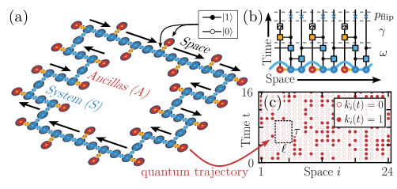
<figcaption class="paper-figure-caption"><b>Fig 1.</b> FIG. 1. Monitored circuit dynamics on the ibm kingston quantum processor. (a) Embedding of the Floquet-East model into the heavy-hex topology of the super- conducting quantum processor. The system qubits (S, blue) are coupled to ancilla qubits (A, red) on every second site. (b) Circuit implementation. During each discrete time step, the system first undergoes unitary evolution [cf. Eq. (1)], be- fore it is coupled to the ancillas. Blue and orange gates denote system–system and system–ancilla couplings parametrized by the quantities ω and γ, respectively. Measuring the ancillas monitors the system dynamics and results in the binary mea- surement outcome ki(t) describing the quantum...</figcaption>
</figure>
<figure class="paper-figure-card">
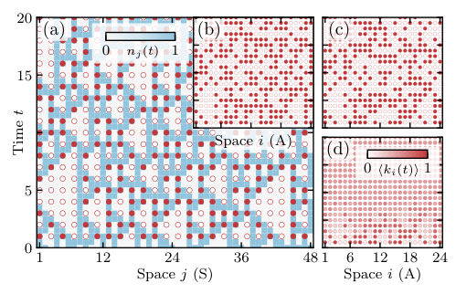
<figcaption class="paper-figure-caption"><b>Fig 2.</b> FIG. 2. Dynamics at the classical deterministic point. (a) Classical simulations for ω = π/2 and γ = π/2. We plot the evolution of the system in terms of local excitation numbers nj(t) at half-time steps of the gate-based dynamics. Empty [filled] red markers indicate the positions of projective measurements performed via the ancilla qubits, resulting in ki(t) = 0 [ki(t) = 1]. (b) Corresponding ancilla measurement outcomes ki(t). (c) Exemplary ancilla measurement outcomes obtained from a single run on the ibm kingston quantum pro- cessor for the same initial state. (d) Average ancilla excitation number ⟨ki(t)⟩of 10 000 such trajectories. We observe that the individual measurement...</figcaption>
</figure>
<figure class="paper-figure-card">
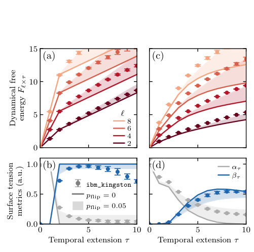
<figcaption class="paper-figure-caption"><b>Fig 3.</b> FIG. 3. Statistics of inactive clusters in space-time. (a) Negative log-probability Fℓ×τ of finding an inactive space- time cluster of size ℓ× τ at the classical deterministic point (ω = π/2 and γ = π/2). For fixed spatial extensions ℓ(see color reported in the legend), we plot the dynamical free en- ergy against the temporal extension τ. We compare results obtained from 200 000 quantum trajectories that we recorded on the ibm kingston quantum processor (markers with error bars indicating twice the standard error of the mean) with classical tensor-network calculations of perfect and softened kinetic constraints (lines and shaded regions with pflip = 0 and pflip = 0.05, respectively). (b)...</figcaption>
</figure>
</div>

<p><strong>Summary.</strong> This paper investigates glassy dynamics in a quantum system using mid-circuit measurements on a superconducting quantum processor. By analyzing the statistics of 'inactive' measurement regions, the authors quantify dynamical heterogeneity. They find a characteristic area-to-perimeter scaling crossover, confirming the system's proximity to a dynamical first-order phase transition using current NISQ devices.</p>
<p><strong>Why it may be interesting.</strong> This work bridges quantum computation hardware limitations (noise) with fundamental condensed matter concepts (glassy dynamics, phase transitions) by analyzing measurement-level observables, providing a novel experimental testbed.</p>
<details>
<summary>Detailed structure</summary>
<p><strong>Main problem.</strong> The study investigates glassy dynamics in many-body systems by analyzing quantum measurement trajectories, revealing structures invisible in ensemble averages.</p>
<p><strong>Main result.</strong> The analysis identifies dynamical heterogeneity, characterized by a crossover in the scaling of inactive cluster probabilities from area-law to perimeter-law, suggesting proximity to a dynamical first-order phase transition.</p>
<p><strong>Method.</strong> The authors analyze quantum trajectories obtained from mid-circuit measurements on a superconducting quantum processor, using thermodynamic analogies to define a dynamical free energy from the probability of inactive space-time regions.</p>
<p><strong>Model / system.</strong> The study employs the Floquet-East model, implemented on a superconducting quantum processor (ibm kingston). The dynamics are complicated by hardware noise, which effectively softens the underlying kinetic constraints.</p>
<p><strong>Key observables.</strong> Dynamical heterogeneity, the probability of finding inactive space-time regions ($p_{\ell 	imes 	au}$), and the resulting dynamical free energy ($F_{\ell 	imes 	au}$).</p>
<p><strong>Important parameters / regimes.</strong> The crossover point in scaling behavior, the effective bit-flip probability ($p_{	ext{flip}}$), and the system size parameters ($\ell, 	au$).</p>
<p><strong>Assumptions / limitations.</strong> The analysis assumes that hardware noise can be modeled as independent bit-flips, effectively softening the kinetic constraints, and that the system's behavior is dominated by the statistics of inactive clusters.</p>
<p><strong>Figures summary.</strong> Figures illustrate circuit implementations, exemplary quantum trajectories showing inactive clusters, and plots comparing the scaling of the negative log-probability ($F_{\ell 	imes 	au}$) versus temporal extensions ($    au$), showing the characteristic crossover.</p>
<p><strong>Paper structure.</strong> The paper progresses by first establishing the physical model and measurement setup, then developing the theoretical framework using cluster probabilities and free energy, and finally applying this analysis to both the classical deterministic limit and the noisy quantum regime to extract scaling signatures.</p>
</details>
<details>
<summary>Abstract</summary>
<p>Mid-circuit measurements provide direct access to trajectory-level observables, revealing dynamical structures in many-body systems that are invisible in ensemble-averaged quantities. We exploit this capability to realize and study an instance of the Floquet-East model on a superconducting quantum processor. Here, the combination of mid-circuit measurements, kinetically constrained unitary operations and hardware noise gives rise to intricate many-body phenomena. Analyzing trajectories obtained from temporally and spatially resolved mid-circuit measurements, we identify dynamical heterogeneity --- a hallmark of glassy dynamics. We quantify this emergent behavior by studying the probability of finding inactive space-time regions of a given size. This quantity displays a crossover from an area- to perimeter-dominated scaling, which is a characteristic property of glasses and is associated with the proximity to a dynamical first-order phase transition. Our results establish current noisy intermediate-scale quantum devices as scalable testbeds for investigating correlated many-body phenomena at the level of measurement trajectories.</p>
</details>
<p><sub><a href="#top">↑ back to top</a></sub></p>

<p><a id="paper-2608.19315"></a></p>
<h3 id="thermal-throttling-of-quantum-state-transfer">⭐ <a href="http://arxiv.org/abs/2608.19315v1">Thermal Throttling of Quantum State Transfer</a></h3>
<p><strong>Highlighted author(s):</strong> Alexey V. Gorshkov<br>
<strong>Authors:</strong> Twesh Upadhyaya, T. C. Mooney, Yifan Hong, Alexey V. Gorshkov<br>
<strong>Type:</strong> theory · <strong>Category:</strong> quantum information and computing · <strong>PDF:</strong> <a href="https://arxiv.org/pdf/2608.19315v1">https://arxiv.org/pdf/2608.19315v1</a><br>
<strong>Analysis basis:</strong> full PDF text, analyzed in chunks
<strong>Topic relevance:</strong> <code>analog quantum simulation</code> <strong>1/5</strong> · <code>correlated / nonlocal dissipation</code> <strong>1/5</strong> · <code>driven-dissipative phase transition</code> <strong>1/5</strong> · <code>methods for driven-dissipative</code> <strong>1/5</strong> · <code>non-equilibrium universality</code> <strong>1/5</strong></p>
<div class="figure-strip-hint">↔ Scroll figures horizontally</div>
<div class="paper-figures-scroll">
<figure class="paper-figure-card">
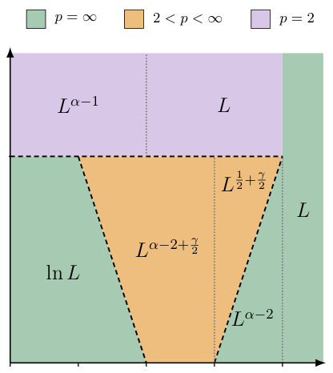
<figcaption class="paper-figure-caption"><b>Fig 1.</b> FIG. 2: “Phase diagram” of the scaling of runtime lower bounds for approximate state transfer over thermal an- cilla states in 1D power-law systems. Power-law expo- nent is α, ϵ is constant, and the thermal ancilla state is specified by δ = L−γ/2. (If ϵ depends on L, a factor of 1 −2ϵ(L) scales the bounds in all regions.) Each region is labeled by the strongest runtime bound (omitting all subleading polylog factors), and its color (see legend at top of figure) indicates which light cone is used in combi- nation with our commutator bounds. The operator-norm (p = ∞) bound is nontrivial over the entire region, but is superseded in certain regimes by the Frobenius (p = 2) or general p-norm...</figcaption>
</figure>
</div>

<p><strong>Summary.</strong> This paper derives theoretical lower bounds on the time required for quantum state transfer across qubit lattices corrupted by thermal noise. By analyzing the necessary growth of commutator norms, the authors show that the transfer runtime scales algebraically with system size in 1D power-law systems. This provides a critical understanding of how thermal throttling limits quantum information processing in realistic quantum hardware.</p>
<p><strong>Why it may be interesting.</strong> This work directly addresses the practical limitations of quantum information processing by quantifying the slowdown caused by realistic thermal noise, providing crucial theoretical benchmarks for quantum hardware design.</p>
<details>
<summary>Detailed structure</summary>
<p><strong>Main problem.</strong> The paper investigates the fundamental limits on achieving approximate quantum state transfer over qubit lattices when thermal noise is present in intermediate ancilla sites.</p>
<p><strong>Main result.</strong> The runtime required for state transfer in 1D power-law systems with thermal ancilla states is shown to depend algebraically on system size, improving upon previous logarithmic bounds.</p>
<p><strong>Method.</strong> The authors derive tight lower bounds on the commutator Schatten p-norms, relating these bounds to the minimum required runtime for approximate state transfer.</p>
<p><strong>Model / system.</strong> The system is a qubit lattice undergoing quantum state transfer, modeled by a channel acting on the composite Hilbert space. The noise is introduced via thermal ancilla states, moving the analysis from exact to the more practical approximate regime.</p>
<p><strong>Key observables.</strong> Commutator Schatten p-norms, approximation error ($\epsilon$), and the state transfer runtime $t$.</p>
<p><strong>Important parameters / regimes.</strong> Temperature scaling with system size, the power-law exponent $\alpha$, and the approximation error $\epsilon$.</p>
<p><strong>Assumptions / limitations.</strong> The analysis extends previous results from exact state transfer ($\epsilon=0$) to the approximate regime ($\epsilon > 0$), and the derivation for mixed states is significantly more complex than for pure states.</p>
<p><strong>Figures summary.</strong> Figure 1 illustrates state transfer over imperfectly initialized sites. Figure 2 presents a phase diagram summarizing the scaling of runtime lower bounds based on system parameters like $\alpha$, $\epsilon$, and $\delta$.</p>
<p><strong>Paper structure.</strong> The paper progresses by first establishing lower bounds for pure ancilla states, then extending these bounds to the more challenging mixed (thermal) ancilla states. It culminates by applying these general bounds to specific 1D power-law systems to derive concrete runtime scaling laws.</p>
</details>
<details>
<summary>Abstract</summary>
<p>Quantum state transfer on qubit lattices is a crucial step in a panoply of quantum information processing tasks. Understanding its fundamental limits in the presence of practical imperfections remains a pressing open question. In particular, it is unclear how thermal noise in the intermediate ancilla sites impedes transfer. In this work, we derive tight lower bounds on the necessary growth of commutator norms to achieve approximate state transfer. Specializing to 1D power-law systems with thermal ancilla states, we demonstrate that state transfer runtimes depend sensitively on the scaling of temperature with system size, improving logarithmic bounds to algebraic ones. Our work extends previous results on exact state transfer to the qualitatively different and more practically relevant regime of approximate state transfer.</p>
</details>
<p><sub><a href="#top">↑ back to top</a></sub></p>

<p><a id="paper-2608.19314"></a></p>
<h3 id="proof-of-the-hiding-conjecture-for-gaussian-boson-sampling-with-an-arbitrary-number-of-squeezed-input-modes">⭐ <a href="http://arxiv.org/abs/2608.19314v1">Proof of the hiding conjecture for Gaussian boson sampling with an arbitrary number of squeezed input modes</a></h3>
<p><strong>Highlighted author(s):</strong> Alexey V. Gorshkov<br>
<strong>Authors:</strong> Laura Shou, Alexey V. Gorshkov, Victor Galitski, Sarah H. Miller<br>
<strong>Type:</strong> theory · <strong>Category:</strong> quantum information and computing · <strong>PDF:</strong> <a href="https://arxiv.org/pdf/2608.19314v1">https://arxiv.org/pdf/2608.19314v1</a><br>
<strong>Analysis basis:</strong> full PDF text, analyzed in chunks
<strong>Topic relevance:</strong> <code>Full counting statistics</code> <strong>1/5</strong> · <code>Keldysh / 2PI / non-Gaussian methods</code> <strong>1/5</strong> · <code>analog quantum simulation</code> <strong>1/5</strong> · <code>interference shaping light</code> <strong>1/5</strong></p>
<div class="figure-strip-hint">↔ Scroll figures horizontally</div>
<div class="paper-figures-scroll">
<figure class="paper-figure-card">
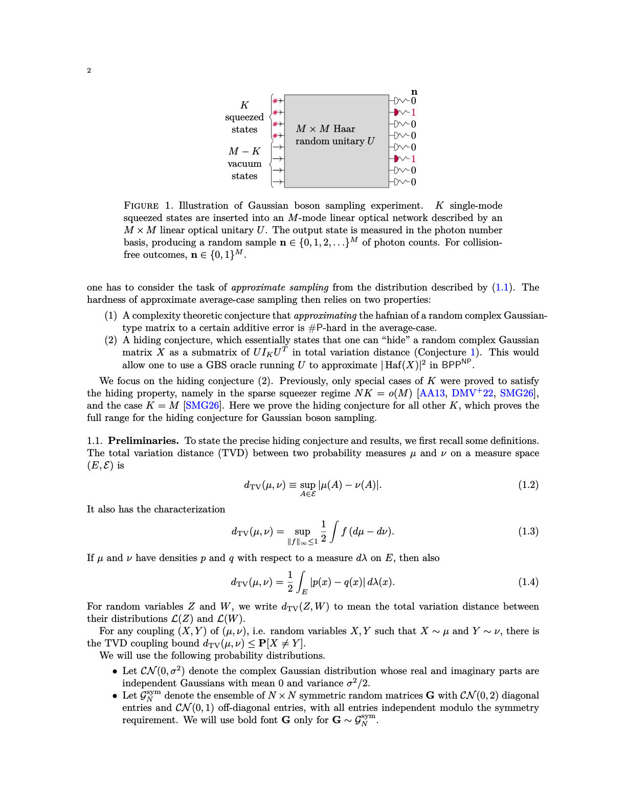
<figcaption class="paper-figure-caption"><b>Fig 1.</b> Low-resolution page preview, page 2</figcaption>
</figure>
<figure class="paper-figure-card">
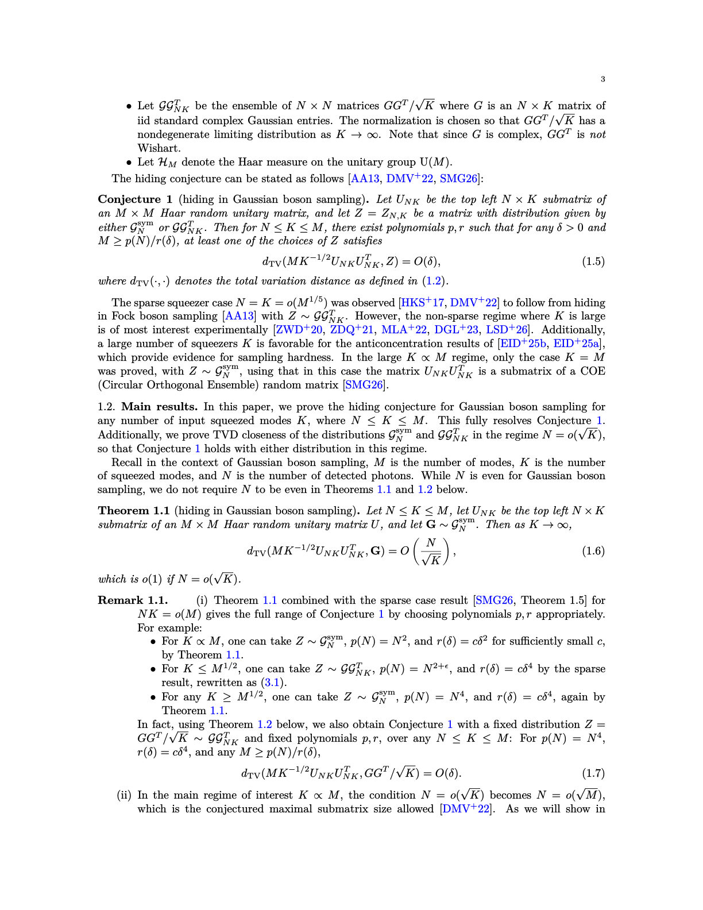
<figcaption class="paper-figure-caption"><b>Fig 2.</b> Low-resolution page preview, page 3</figcaption>
</figure>
<figure class="paper-figure-card">
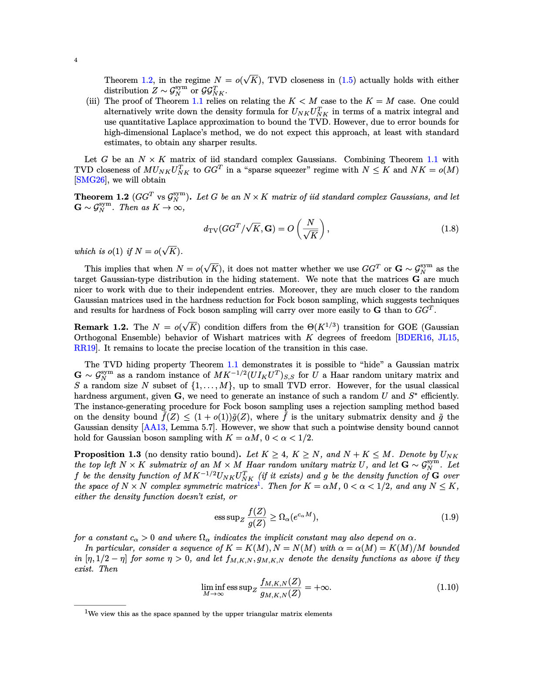
<figcaption class="paper-figure-caption"><b>Fig 3.</b> Low-resolution page preview, page 4</figcaption>
</figure>
<figure class="paper-figure-card">
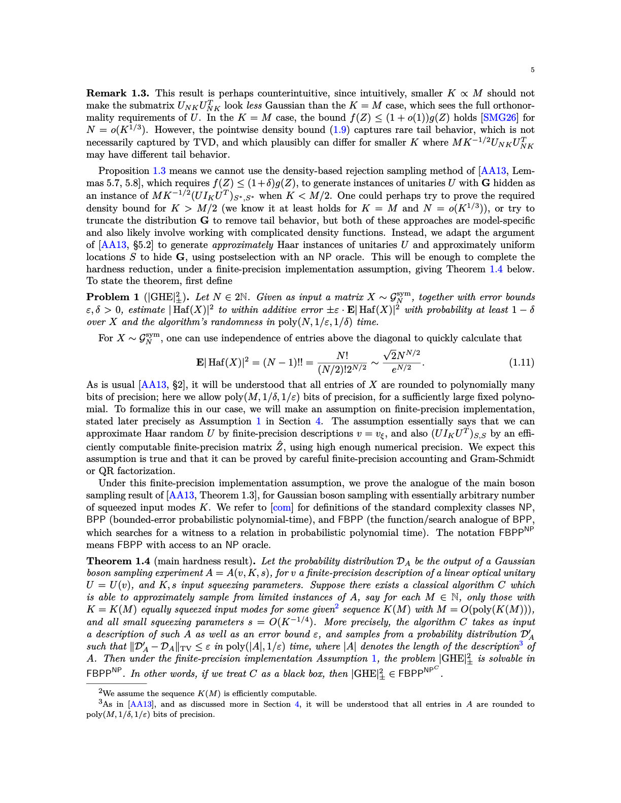
<figcaption class="paper-figure-caption"><b>Fig 4.</b> Low-resolution page preview, page 5</figcaption>
</figure>
<figure class="paper-figure-card">
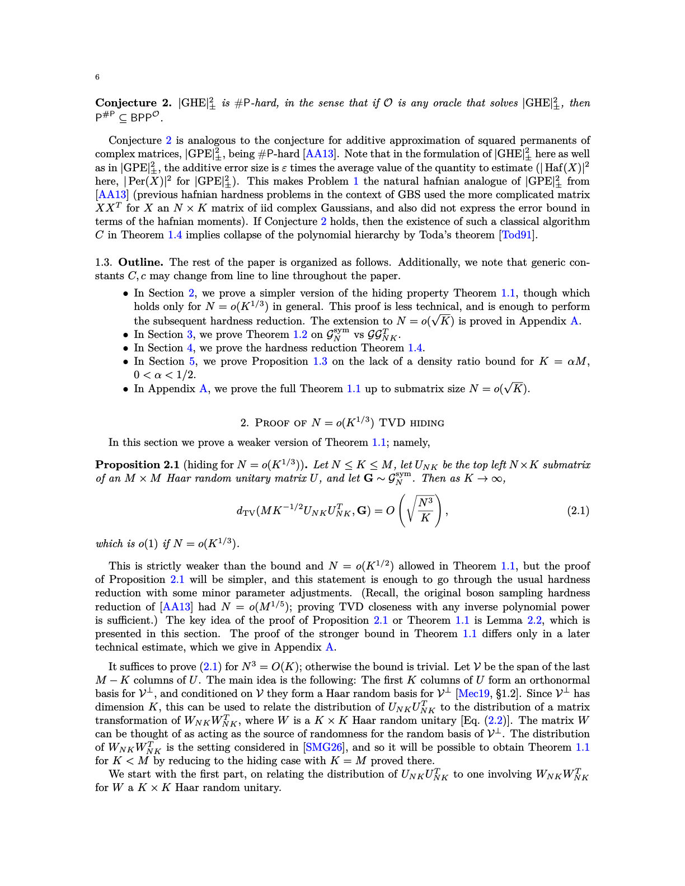
<figcaption class="paper-figure-caption"><b>Fig 5.</b> Low-resolution page preview, page 6</figcaption>
</figure>
</div>

<p><strong>Summary.</strong> This paper provides a comprehensive mathematical proof for the hiding conjecture in Gaussian Boson Sampling (GBS), a key task for demonstrating quantum advantage. By showing that the observed photon count statistics are close to known Gaussian random matrix ensembles, the authors establish the classical hardness of GBS. The methodology heavily utilizes advanced tools from random matrix theory and information geometry to bound statistical distances.</p>
<p><strong>Why it may be interesting.</strong> This work directly tackles the computational complexity of a leading quantum advantage primitive (GBS), providing rigorous mathematical tools (TVD bounds, random matrix theory) applicable to other quantum optical or quantum simulation protocols.</p>
<details>
<summary>Detailed structure</summary>
<p><strong>Main problem.</strong> The paper completes the proof of the 'hiding conjecture' for Gaussian boson sampling (GBS) with an arbitrary number of squeezed input modes, which is central to establishing the classical hardness of GBS.</p>
<p><strong>Main result.</strong> The total variation distance between the empirical submatrix derived from GBS and known Gaussian ensembles is shown to be $O(N/\sqrt{K})$ when $N = o(\sqrt{K})$, proving the conjecture for all $K$.</p>
<p><strong>Method.</strong> The proof relies on bounding the total variation distance using $\chi^2$-divergence and concentration inequalities derived from the Bakry–Émery criterion applied to random matrix expectations.</p>
<p><strong>Model / system.</strong> The system is Gaussian Boson Sampling (GBS) implemented on $M$ optical modes, involving an evolution governed by a passive linear optical unitary $U$ and $K$ squeezed input modes.</p>
<p><strong>Key observables.</strong> The probability distribution of the photon count outcome $n$, and the total variation distance $d_{TV}(	ext{MK}^{-1/2}U_{I_K}U^T_{n,n}, 	ext{Gaussian Ensemble})$.</p>
<p><strong>Important parameters / regimes.</strong> The number of modes ($M$), the number of squeezed modes ($K$), and the total observed photon number ($N$). The analysis is strongest in the regime $N = o(\sqrt{K})$.</p>
<p><strong>Assumptions / limitations.</strong> The analysis relies on the assumption that the density-based instance generating method fails for $K < M/2$, and the hardness reduction for the general case relies on finite-precision assumptions.</p>
<p><strong>Paper structure.</strong> The paper first establishes the TVD closeness between the GBS submatrix and Gaussian ensembles (Theorems 1.1 and 1.2). It then addresses the failure of standard instance generation methods for $K < M/2$ (Proposition 1.3). Finally, it uses these results to prove the main hardness result, showing that solving GBS is equivalent to solving a hard problem related to the Hafnian.</p>
</details>
<details>
<summary>Abstract</summary>
<p>Gaussian boson sampling (GBS) is a sampling task proposed to demonstrate quantum advantage. We consider Gaussian boson sampling on $M$ optical modes, with $K$ equally squeezed input modes and $N$ observed photon counts. We complete the proof of the hiding conjecture for Gaussian boson sampling with an arbitrary number of squeezers $K$, which is a part of the argument for classical hardness of GBS. In particular, we show that for any $K$ and $N=o(\sqrt{K})$, the symmetric product $MK^{-1/2}U_{NK}U_{NK}^T$, for $U_{NK}$ the top left $N\times K$ submatrix of an $M\times M$ Haar random unitary $U$, is close in total variation distance to both an $N\times N$ symmetric complex Gaussian matrix $\mathbf G$ with independent entries, and the symmetric product $GG^T/\sqrt{K}$ for $G$ an $N\times K$ matrix of iid standard complex Gaussians. We show however that the density-based instance generating method of [Aaronson and Arkhipov, Theory Comput. 9, 143 (2013), Lemma 5.8] used to efficiently implement a hiding procedure fails for Gaussian boson sampling with $K=cM$ if $c<1/2$. Instead we use approximate instance generating to implement the hiding for the usual classical hardness reduction.</p>
</details>
<p><sub><a href="#top">↑ back to top</a></sub></p>

<p><a id="paper-2608.20233"></a></p>
<h3 id="nonthermal-dynamics-of-a-one-dimensional-rydberg-atom-chain-with-constraint-four-body-interactions"><a href="http://arxiv.org/abs/2608.20233v1">Nonthermal Dynamics of a One-dimensional Rydberg-atom Chain with Constraint Four-body Interactions</a></h3>
<p><strong>Authors:</strong> Tianyi Yan, Weibin Li<br>
<strong>Type:</strong> theory · <strong>Category:</strong> other · <strong>PDF:</strong> <a href="https://arxiv.org/pdf/2608.20233v1">https://arxiv.org/pdf/2608.20233v1</a><br>
<strong>Analysis basis:</strong> full PDF text, analyzed in chunks
<strong>Topic relevance:</strong> 🔥 <code>scars &amp; prethermalization</code> <strong>5/5</strong> · 🔥 <code>Rydberg arrays</code> <strong>4/5</strong> · 🔥 <code>analog quantum simulation</code> <strong>4/5</strong> · <code>non-equilibrium universality</code> <strong>3/5</strong> · <code>Frenkel-Kontorova</code> <strong>1/5</strong></p>
<div class="figure-strip-hint">↔ Scroll figures horizontally</div>
<div class="paper-figures-scroll">
<figure class="paper-figure-card">
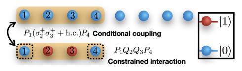
<figcaption class="paper-figure-caption"><b>Fig 1.</b> Figure 1. Constrained four-body interaction on a one- dimensional chain of spin-1/2 atoms. In each block of four sites the central pair can flip only if the two boundary atoms are in |0⟩state. After the pair is excited to state |1⟩the tetramer acquires a configuration-dependent four-body inter- action. The first four sites of the chain are shown.</figcaption>
</figure>
<figure class="paper-figure-card">
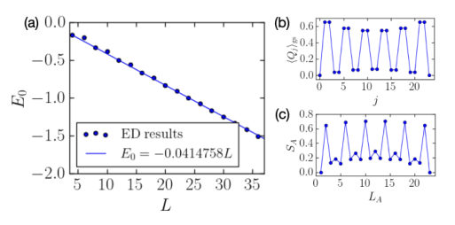
<figcaption class="paper-figure-caption"><b>Fig 2.</b> Figure 2. (a) Ground state energy versus system size L; the blue line is the thermodynamic-limit prediction of Eq. (??). (b) The site-resolved Rydberg occupation of the ground state versus site index. (c) Bipartite entanglement entropy of the ground state versus the subsystem size. In all panels, g = 0.1.</figcaption>
</figure>
<figure class="paper-figure-card">
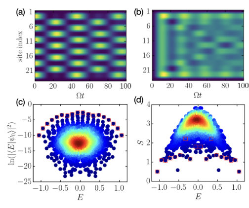
<figcaption class="paper-figure-caption"><b>Fig 3.</b> Figure 3. (a) Occupation ⟨Qi⟩starting from |Z4⟩. (b) Occu- pation ⟨Qi⟩starting from |0⟩. (c) Overlaps of |Z4⟩with the eigenstates. (d) Bipartite entanglement entropy of the eigen- states. In all panels, g = 0.1.</figcaption>
</figure>
<figure class="paper-figure-card">
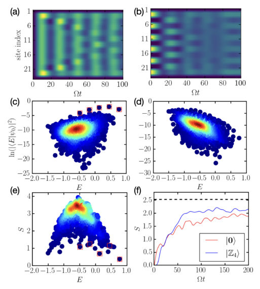
<figcaption class="paper-figure-caption"><b>Fig 4.</b> Figure 4. Dynamics and spectrum of the full effective model, Eq. (1). (a) Occupation ⟨Qi⟩starting from |0⟩. (b) Occu- pation ⟨Qi⟩starting from |Z4⟩. (c) Overlaps of |0⟩with the eigenstates. (d) Overlaps of |Z4⟩with the eigenstates. (e) Bi- partite entanglement entropy of the eigenstates; the dashed line is the Page value ≈2.54. (f) Entanglement-entropy dy- namics from |0⟩and |Z4⟩. Panels (a) and (b) use L = 24; panels (c)–(f) use L = 36. In all panels, g = 0.1.</figcaption>
</figure>
<figure class="paper-figure-card">
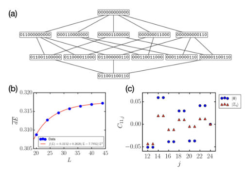
<figcaption class="paper-figure-caption"><b>Fig 5.</b> Figure 5. Scar structure of Eq. (1). (a) Connectivity graph in the allowed computational basis. (b) Average energy spacing among the four eigenstates with the largest overlap on |0⟩, versus chain length L. (c) Connected correlations Ci,j = ⟨QiQj⟩−⟨Qi⟩⟨Qj⟩between site 11 and site j for |0⟩ and |Z4⟩, taken at Ωt = 35 and 30, respectively, for L = 24. In (b) and (c), g = 0.1.</figcaption>
</figure>
</div>

<p><strong>Summary.</strong> This paper models a 1D chain of Rydberg atoms interacting via constrained four-body forces, simulating non-thermal dynamics. By comparing a simplified kinetic model to the full interacting model, the authors show that the four-body term fundamentally alters the system's dynamics, leading to persistent quantum scars and long-range correlations. This provides a pathway to study controlled non-ergodic behavior using advanced Rydberg array platforms.</p>
<p><strong>Why it may be interesting.</strong> This work directly addresses the control of non-equilibrium quantum dynamics by engineering higher-order, state-dependent interactions (four-body) using Rydberg blockade/antiblockade mechanisms, which is a major frontier in AMO physics.</p>
<details>
<summary>Detailed structure</summary>
<p><strong>Main problem.</strong> The study investigates non-thermal dynamics and weak ergodicity breaking in a one-dimensional chain of Rydberg atoms subjected to constrained four-body interactions.</p>
<p><strong>Main result.</strong> The inclusion of the state-dependent four-body interaction reverses the dynamics observed in the simpler kinetic model, causing the initial state $|0
angle$ to develop long-range correlations while the system remains non-ergodic.</p>
<p><strong>Method.</strong> The authors employed an ansatz for the many-body ground state to diagonalize the Hamiltonian, deriving an effective low-energy model and analyzing time evolution using quantum many-body scar diagnostics.</p>
<p><strong>Model / system.</strong> The system is a 1D chain of Rydberg atoms realized in a Peierls array with alternating bond lengths, governed by a kinetically constrained Hamiltonian involving four-body interactions.</p>
<p><strong>Key observables.</strong> Ground state energy scaling ($E_0 \propto L$), bipartite entanglement entropy, site-resolved occupation ($\langle Q_j 
angle$), and state revival dynamics.</p>
<p><strong>Important parameters / regimes.</strong> The four-body interaction strength, the alternating bond lengths (related to blockade/antiblockade), and the chain length $L$.</p>
<p><strong>Assumptions / limitations.</strong> The analysis relies on developing a specific ansatz for the many-body ground state and approximating the full Hamiltonian via Schrieffer–Wolff transformations.</p>
<p><strong>Figures summary.</strong> Figures illustrate the constrained interaction, ground state properties (energy, occupation, entanglement), and time evolution dynamics for different initial states ($|0
angle$ vs $|Z_4
angle$) under the kinetic term only versus the full model.</p>
<p><strong>Paper structure.</strong> The paper progresses by defining the constrained four-body Hamiltonian, simplifying it using approximations (RWA, anti-blockade), deriving an effective Hamiltonian, and then analyzing the resulting dynamics and ground state properties by comparing the results from the simplified kinetic model versus the full interacting model.</p>
</details>
<details>
<summary>Abstract</summary>
<p>We investigate dynamics of a linear chain of Rydberg atoms driven by a constrained four-body interaction, where two neighboring atoms are excited simultaneously from the electronic ground state $|0\rangle$ to Rydberg state $|1\rangle$ only when their closest neighbors are in $|0\rangle$ state. By employing an ansatz for the many-body ground state, the low-energy Hamiltonian is given by a tridiagonal form. The many-body ground state energy, which scales linearly with the chain length $L$, is obtained analytically in the thermodynamic limit and agrees with the one of the exact diagonalization. Our model supports quantum many-body scar eigenstates that are nearly equally spaced energetically. The scar states overlap strongly with the basis state $|\mathbf{0}\rangle=|0\cdots 0\rangle$. We show that the overlap distribution is tilted by the state-dependent four-body interaction. This leads to non-ergodic dynamics, evidenced by the revival of the initial state. The four-body constrained model can be realized with Rydberg atoms in a Peierls array with alternating bond lengths, where atoms on the shorter and longer bonds experience Rydberg blockade and antiblockade, respectively. Our study provides a pathway to explore constrained non-ergodic dynamics with four-body interactions by combining the Rydberg blockade and antiblockade.</p>
</details>
<p><sub><a href="#top">↑ back to top</a></sub></p>

<p><a id="paper-2608.20067"></a></p>
<h3 id="kibble-zurek-scaling-in-the-dicke-model-at-mesoscopic-scales"><a href="http://arxiv.org/abs/2608.20067v1">Kibble--Zurek Scaling in the Dicke Model at Mesoscopic Scales</a></h3>
<p><strong>Authors:</strong> Haowei Li, Hanteng Wang<br>
<strong>Type:</strong> theory · <strong>Category:</strong> statistical mechanics · <strong>PDF:</strong> <a href="https://arxiv.org/pdf/2608.20067v1">https://arxiv.org/pdf/2608.20067v1</a><br>
<strong>Analysis basis:</strong> full PDF text, analyzed in chunks
<strong>Topic relevance:</strong> 🔥 <code>Dicke superradiance</code> <strong>4/5</strong> · 🔥 <code>Keldysh / 2PI / non-Gaussian methods</code> <strong>4/5</strong> · 🔥 <code>driven-dissipative phase transition</code> <strong>4/5</strong> · 🔥 <code>non-equilibrium universality</code> <strong>4/5</strong> · <code>Tavis-Cummings &amp; cavity-many-emitter</code> <strong>3/5</strong> · <code>correlated / nonlocal dissipation</code> <strong>3/5</strong> · <code>methods for driven-dissipative</code> <strong>3/5</strong> · <code>superradiant laser</code> <strong>3/5</strong> · <code>analog quantum simulation</code> <strong>2/5</strong> · <code>quantum measurements</code> <strong>1/5</strong></p>
<div class="figure-strip-hint">↔ Scroll figures horizontally</div>
<div class="paper-figures-scroll">
<figure class="paper-figure-card">
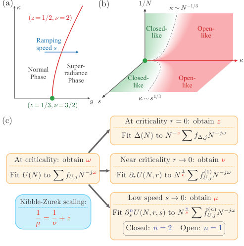
<figcaption class="paper-figure-caption"><b>Fig 1.</b> FIG. 1. (a) Phase diagram of the Dicke model in the plane of light-matter coupling g and dissipation κ. Two distinct universality classes are identified at large N: closed (green) and open (red). The ramp protocol is defined by the ramping speed s. (b) Crossover regions set by size N, dissipation κ, and speed s in the ramping dynamics. (c) Scaling protocol at mesoscopic scales that encodes the irrelevant exponent ω. The exponents ν, z, and µ are then extracted independently, and the KZ relation 1/µ = 1/ν + z is tested.</figcaption>
</figure>
<figure class="paper-figure-card">
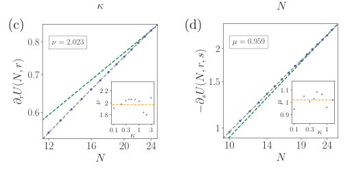
<figcaption class="paper-figure-caption"><b>Fig 2.</b> FIG. 3. Open Dicke model. (a) Joint critical Binder-ratio fit for different κ ∈[0.1, 3], used to fix ω. Red dashed curves show extrapolated U(N) vs κ at fixed N = 102, 103, 104, and N →∞, ordered from sparse to dense. (b)–(d) Extraction of z, ν, and µ from the Liouvillian gap, Binder-ratio derivative, and linear small-speed response, respectively. Insets in (b)– (d) show the corresponding κ dependence.</figcaption>
</figure>
<figure class="paper-figure-card">
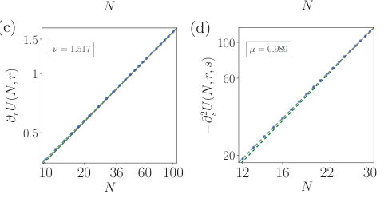
<figcaption class="paper-figure-caption"><b>Fig 3.</b> FIG. 2. Closed Dicke model. (a) Critical Binder ratio used to fix the leading irrelevant exponent ω. The red dashed line marks extrapolated U(N →∞). (b)–(d) Extraction of z, ν, and µ from the critical gap, Binder-ratio derivative, and small-speed response, respectively. Gray dashed curves in- clude corrections to scaling up to j = 2; green dashed lines show the leading power laws with the fitted exponents. For all figures, we set ω0 = ωz = 1.</figcaption>
</figure>
<figure class="paper-figure-card">
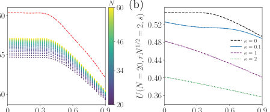
<figcaption class="paper-figure-caption"><b>Fig 4.</b> FIG. 4. (a) Ramped Binder ratio in the closed Dicke model for different system sizes; red dashed lines indicate the N →∞ extrapolation. (b) Comparison of the ramped Binder ratio between the closed and open Dicke models for different κ.</figcaption>
</figure>
<figure class="paper-figure-card">
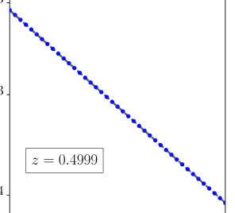
<figcaption class="paper-figure-caption"><b>Fig 5.</b> FIG. 5. Soft-mode spectral gap of the open Dicke model at the critical point, obtained within the Hartree–Fock–Bogoliubov approximation for κ = 1. The calculation is performed over the range N = 105–107, where the asymptotic N −1/2 decay becomes clearly visible.</figcaption>
</figure>
</div>

<p><strong>Summary.</strong> This paper develops a unified scaling framework to accurately determine critical exponents for the Dicke model at mesoscopic sizes. By incorporating leading irrelevant corrections, the authors successfully describe the critical dynamics across both coherent and dissipative regimes. This methodology offers a general approach for resolving static and dynamical critical scaling in various open quantum systems.</p>
<p><strong>Why it may be interesting.</strong> This work provides a powerful, generalizable theoretical tool for analyzing critical dynamics in complex, open quantum systems where experimental access to the thermodynamic limit is impossible.</p>
<details>
<summary>Detailed structure</summary>
<p><strong>Main problem.</strong> The core challenge is extracting universal critical exponents for the Dicke model at mesoscopic scales, complicated by slow correlation time divergence and crossover into a dissipative universality class.</p>
<p><strong>Main result.</strong> The authors establish a unified mesoscopic scaling framework that successfully recovers the Kibble-Zurek exponents for both closed and open quantum systems, clarifying the competition between finite size, dissipation, and ramping speed.</p>
<p><strong>Method.</strong> The work employs large-N analysis within a unified Keldysh field theory, developing a multi-stage finite-size scaling protocol that incorporates leading irrelevant corrections.</p>
<p><strong>Model / system.</strong> The study focuses on the Dicke model, a paradigmatic system for collective light-matter physics exhibiting a superradiant phase transition. It is analyzed in both closed (Hamiltonian) and open (Lindblad equation) system settings.</p>
<p><strong>Key observables.</strong> Critical exponents ($
u, z, \mu$), Binder ratio ($U(N)$), and the soft-mode spectral gap ($\Delta(N)$).</p>
<p><strong>Important parameters / regimes.</strong> Dissipation rate ($\kappa$), particle number ($N$), and ramping speed ($s$).</p>
<p><strong>Assumptions / limitations.</strong> The analysis relies on the validity of large-N expansions and the ability to map the dynamics onto a unified scaling variable that accounts for irrelevant corrections.</p>
<p><strong>Figures summary.</strong> Figures illustrate the phase diagram distinguishing closed/open classes, the scaling protocol involving irrelevant exponents, and the confirmation of scaling laws for both coherent and dissipative regimes.</p>
<p><strong>Paper structure.</strong> The paper progresses by first identifying the challenge of mesoscopic critical dynamics, then developing the unified scaling framework using large-N methods, and finally applying this framework to extract and verify the exponents for both the closed and open Dicke models.</p>
</details>
<details>
<summary>Abstract</summary>
<p>The Dicke model is a paradigmatic setting for collective light-matter physics and the superradiant phase transition. Yet extracting the critical exponents is challenging at experimentally accessible mesoscopic sizes, due to the slow divergence of the correlation time under all-to-all coupling and a photon-loss-driven crossover to a distinct dissipative universality class. Here, we perform a large-$N$ analysis that identifies distinct coherent and dissipative fixed points for the closed and open Dicke models. We then develop a unified mesoscopic scaling framework that incorporates the leading irrelevant correction and, going beyond static and spectral probes, brings ramping dynamics under the same scaling description. It recovers the corresponding exponents, verifies Kibble-Zurek scaling, and clarifies how finite size, dissipation, and speed compete in the ramping dynamics. Our work thus establishes a unified framework for resolving static and dynamical critical scaling in closed and open quantum systems, with broader applicability to mesoscopic systems with long-range interactions.</p>
</details>
<p><sub><a href="#top">↑ back to top</a></sub></p>

<p><a id="paper-2608.20151"></a></p>
<h3 id="a-zoology-of-quantum-turing-patterns"><a href="http://arxiv.org/abs/2608.20151v1">A Zoology of Quantum Turing Patterns</a></h3>
<p><strong>Authors:</strong> Kazuki Ikeda<br>
<strong>Type:</strong> theory · <strong>Category:</strong> statistical mechanics · <strong>PDF:</strong> <a href="https://arxiv.org/pdf/2608.20151v1">https://arxiv.org/pdf/2608.20151v1</a><br>
<strong>Analysis basis:</strong> full PDF text, analyzed in chunks
<strong>Topic relevance:</strong> 🔥 <code>driven-dissipative phase transition</code> <strong>4/5</strong> · 🔥 <code>methods for driven-dissipative</code> <strong>4/5</strong> · <code>correlated / nonlocal dissipation</code> <strong>3/5</strong> · <code>non-equilibrium universality</code> <strong>3/5</strong> · <code>Keldysh / 2PI / non-Gaussian methods</code> <strong>2/5</strong> · <code>analog quantum simulation</code> <strong>2/5</strong> · <code>quantum measurements</code> <strong>1/5</strong></p>
<div class="figure-strip-hint">↔ Scroll figures horizontally</div>
<div class="paper-figures-scroll">
<figure class="paper-figure-card">
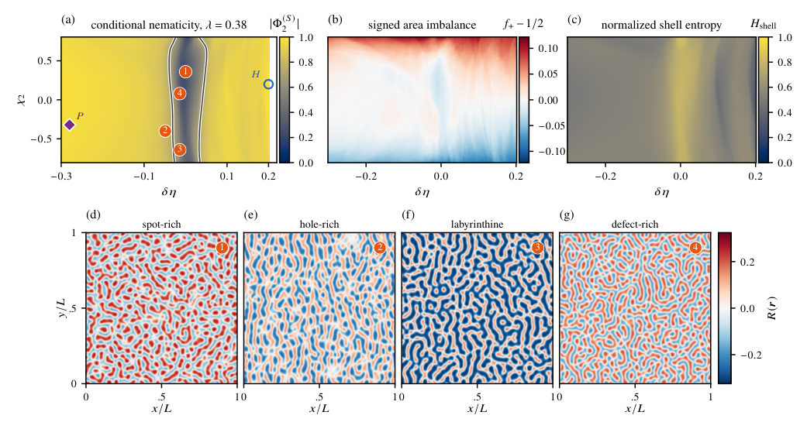
<figcaption class="paper-figure-caption"><b>Fig 1.</b> FIG. 1. Morphology atlas and fields from different preparations. Conditional stripe nematicity at 𝜆= 0.38 is mapped in panel (a). Gray cells fail the resolved-field criterion and the contour marks |Φ(𝑆) 2 | = 0.72. The filled diamond P and open circle H denote the two stable stripe branches. Markers 1 through 4 identify the spot-rich, hole-rich, labyrinthine, and defect-rich fields in panels (d) through (g). Area imbalance and shell entropy appear in panels (b) and (c). Every atlas cell starts from the same state. Preparation dependence is tested in the Supplemental Material. The letter P labels the principal stripe branch, while 𝑤𝑃denotes the Glauber–Sudarshan witness.</figcaption>
</figure>
<figure class="paper-figure-card">
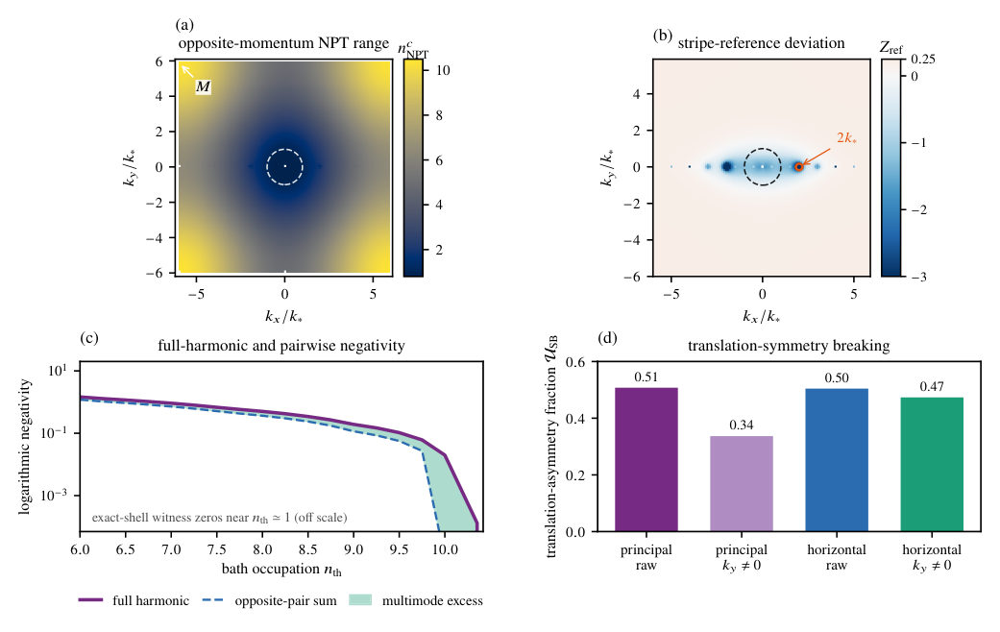
<figcaption class="paper-figure-caption"><b>Fig 2.</b> FIG. 2. Momentum-space Gaussian structure and translation breaking. Panel (a) maps the noise range certified by the negative partial transpose (NPT) criterion for opposite-momentum pairs. The dashed circle identifies the exact 𝑘∗shell, and 𝑀is the endpoint invariant under momentum inversion. Panel (b) gives the standardized crossing difference 𝑍ref relative to uniform comparison states made stationary by constant drives. Negative values place the stripe crossing below the family mean, with the contrast concentrated near 2𝑘∗. The linear scale spans −3 to 0.25, maps zero to white, and clips values below −3 to the lower endpoint. Panel (c) shows the scanned Bloch partition with the largest...</figcaption>
</figure>
<figure class="paper-figure-card">
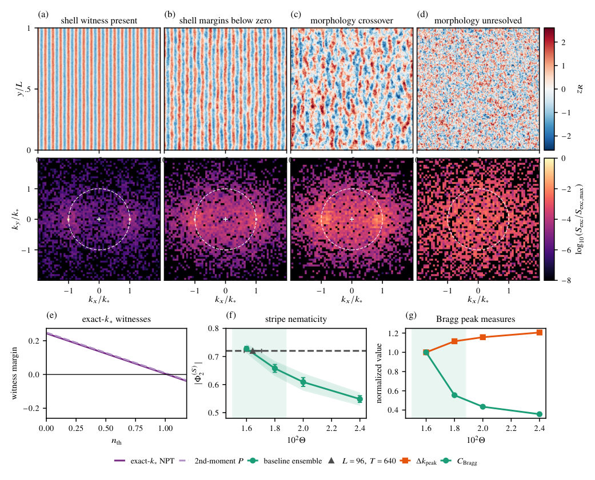
<figcaption class="paper-figure-caption"><b>Fig 3.</b> FIG. 3. Gaussian witness loss and stripe nematic crossover. Each field in panels (a) through (d) is centered and standardized separately. The panels show a stripe with a positive witness margin on the exact 𝑘∗shell, a resolved stripe after both margins on that shell cross zero, the morphology crossover, and an unresolved morphology. Color therefore encodes form on a common dimensionless scale. The crossover estimator uses the trajectory ensemble, and the four snapshots are illustrative. The Supplement identifies the source arrays and retained metadata for these snapshots. The middle row gives the corresponding Fourier powers after background subtraction on common momentum axes and a common...</figcaption>
</figure>
<figure class="paper-figure-card">
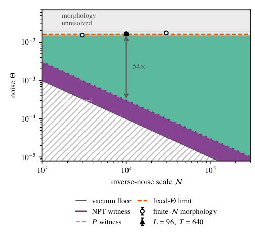
<figcaption class="paper-figure-caption"><b>Fig 4.</b> FIG. 4. Parametric separation of Gaussian witness and stripe nematic scales. The NPT and second-moment 𝑃thresholds on the exact 𝑘∗shell decrease as N −1. Finite-N morphology estimates approach the dashed limit obtained from the first-moment equation at fixed Θ. The hatched region lies below the vacuum-noise floor. Between the Gaussian curves and the morphology scale, resolved stripes remain after both witness margins on the exact 𝑘∗shell have crossed zero. The filled triangle gives the 𝐿= 96, 𝑇= 640 estimate. At N = 104, the morphology threshold is about 54 times the NPT threshold, one point on a separation that grows with N.</figcaption>
</figure>
<figure class="paper-figure-card">
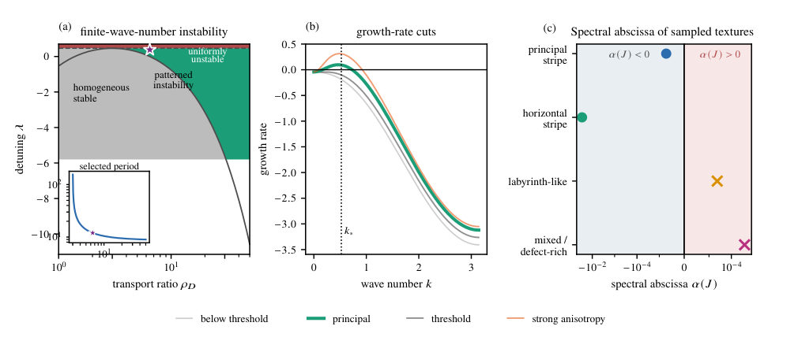
<figcaption class="paper-figure-caption"><b>Fig 5.</b> FIG. 5. Model and linear stability. The finite-wave-number instability wedge appears in panel (a). The white-edged star marks (𝜆, 𝜌𝐷) = (0.38, 3 + 2 √</figcaption>
</figure>
</div>

<p><strong>Summary.</strong> This work explores the rich 'zoology' of quantum Turing patterns supported by a single Lindblad equation. It rigorously demonstrates that macroscopic morphological order (like stripes) can persist even when standard measures of quantum entanglement (Gaussian witnesses) suggest their absence. The findings highlight a quantitative separation between these two distinct types of order as the system size increases.</p>
<p><strong>Why it may be interesting.</strong> It provides a detailed theoretical framework for distinguishing between different types of order (classical/morphological vs. quantum/entanglement) in open quantum systems, which is highly relevant for understanding pattern formation in quantum optics and condensed matter.</p>
<details>
<summary>Detailed structure</summary>
<p><strong>Main problem.</strong> The paper investigates quantum Turing pattern zoology, exploring how a single Lindblad equation can support a diverse morphology atlas (stripes, spots, holes, etc.). It specifically focuses on the separation between macroscopic order and quantum correlations.</p>
<p><strong>Main result.</strong> Visible Turing stripes can persist even when Gaussian entanglement witnesses cross zero, and the threshold for morphology order grows parametrically with system size ($N$) relative to the witness thresholds.</p>
<p><strong>Method.</strong> The analysis uses the Lindblad master equation to model system dynamics, calculating mean values and fluctuations via the covariance matrix evolution. Key diagnostics include Gaussian witnesses and morphology measures.</p>
<p><strong>Model / system.</strong> The system is a periodic array of bosonic modes governed by a Lindblad equation involving a Hamiltonian and jump operators, describing parametrically driven nonlinear resonators.</p>
<p><strong>Key observables.</strong> Stripe nematicity, Gaussian witnesses (NPT, P-witness), covariance matrix asymmetry (USB), and various morphology thresholds ($\Theta_c^M$).</p>
<p><strong>Important parameters / regimes.</strong> System size ($N$), lattice size ($L$), and various coupling/gain/loss parameters defining the Lindblad generator.</p>
<p><strong>Assumptions / limitations.</strong> The analysis compares finite-$N$ results to the $N 	o \infty$ limit and relies on linearizing the fluctuation dynamics around mean values.</p>
<p><strong>Figures summary.</strong> Figures illustrate the morphology atlas (Fig. 1), momentum space structure and witness crossings (Fig. 2), and the parametric separation of morphology and witness thresholds (Fig. 4).</p>
<p><strong>Paper structure.</strong> The paper systematically analyzes the dynamics using the Lindblad equation, first characterizing the full morphology space, then quantifying quantum correlations using witnesses, and finally demonstrating the parametric separation between these two types of order.</p>
</details>
<details>
<summary>Abstract</summary>
<p>We explore quantum Turing pattern zoology, where the same Lindblad equation supports a morphology atlas of stripes, spots, holes, labyrinths, and defects. The stable stripe species provides a quantitatively controlled case in which morphology and Gaussian witness loss separate parametrically. In particular, visible Turing stripes can remain after two Gaussian witness margins associated with the same $k_*$ mode cross zero in a completely positive Lindblad lattice. The witness thresholds on the exact shell fall as $\mathcal{N}^{-1}$. The stripe nematic threshold tends to a nonzero value at fixed lattice size, time window, and morphology criterion. The ratio of the morphology threshold to either witness threshold therefore grows with $\mathcal{N}$. Imaging and momentum-resolved covariance measurements probe these sectors separately.</p>
</details>
<p><sub><a href="#top">↑ back to top</a></sub></p>

<p><a id="paper-2608.19694"></a></p>
<h3 id="dissipation-tunable-extended-and-localized-steady-states-in-a-non-disordered-lattice"><a href="http://arxiv.org/abs/2608.19694v1">Dissipation-tunable extended and localized steady states in a non-disordered lattice</a></h3>
<p><strong>Authors:</strong> Ming-Jie Tao, Yi-Ting Wang, Jing Li, Hongsheng Hou, Xiang-Ping Jiang, Lei Pan<br>
<strong>Type:</strong> theory · <strong>Category:</strong> disordered systems and neural networks · <strong>PDF:</strong> <a href="https://arxiv.org/pdf/2608.19694v1">https://arxiv.org/pdf/2608.19694v1</a><br>
<strong>Analysis basis:</strong> full PDF text, analyzed in chunks
<strong>Topic relevance:</strong> 🔥 <code>correlated / nonlocal dissipation</code> <strong>4/5</strong> · <code>analog quantum simulation</code> <strong>3/5</strong> · <code>driven-dissipative phase transition</code> <strong>3/5</strong> · <code>methods for driven-dissipative</code> <strong>3/5</strong> · <code>non-equilibrium universality</code> <strong>2/5</strong> · <code>quantum measurements</code> <strong>2/5</strong> · <code>Keldysh / 2PI / non-Gaussian methods</code> <strong>1/5</strong> · <code>scars &amp; prethermalization</code> <strong>1/5</strong></p>
<div class="figure-strip-hint">↔ Scroll figures horizontally</div>
<div class="paper-figures-scroll">
<figure class="paper-figure-card">
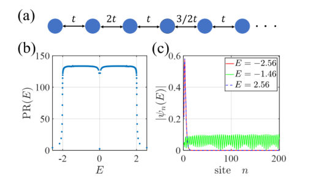
<figcaption class="paper-figure-caption"><b>Fig 1.</b> FIG. 1. (a) Schematic of the inhomogeneously-hopped lattice with N = 2 hopping modulation, which supports M = 1 sur- face bound state in the continuum (BIC) at the parameter point β = 1. (b) Participation ratio PR(E) of the single- particle eigenstates versus their energy E, computed numeri- cally for a finite lattice of L = 201 sites; the horizontal spread of the data simultaneously displays the energy spectrum. (c) Real-space wavefunction amplitudes |ψn(E)| for representa- tive eigenstates: an extended bulk state at E = −1.46, de- localized across the lattice, and localized boundary modes at E = ±2.56, confined near the lattice edges.</figcaption>
</figure>
<figure class="paper-figure-card">
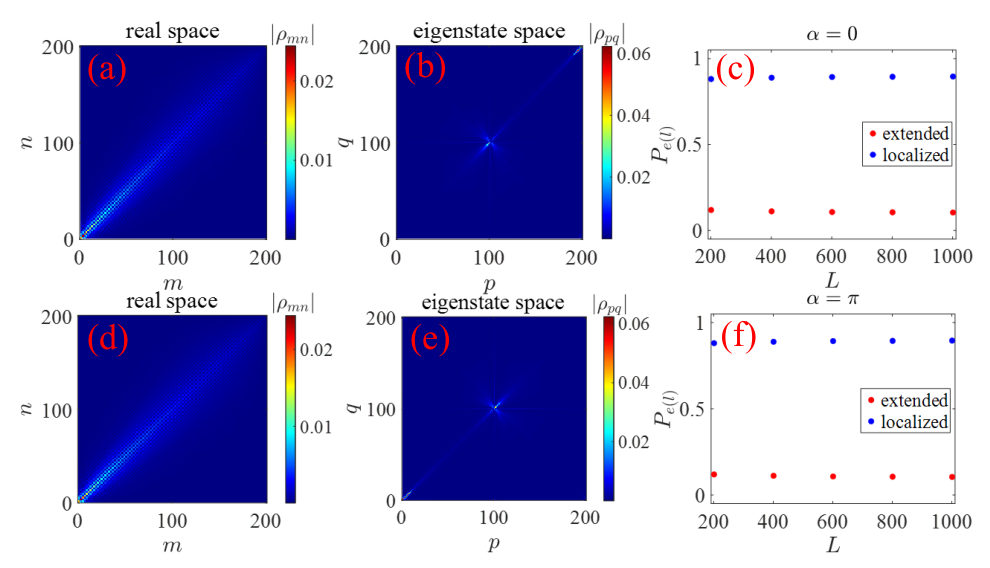
<figcaption class="paper-figure-caption"><b>Fig 2.</b> FIG. 2. Localization properties of the stationary state for α = 0 and α = π. (a),(d) Absolute values of the steady-state density- matrix elements |ρmn| in real space for α = 0 and α = π, respectively. (b),(e) Corresponding density-matrix distributions |ρpq| in the eigenstate basis of the underlying Hamiltonian. (c),(f) Finite-size scaling of the eigenstate localization measure P (l) e for system sizes L = 201, 401, 601, 801, and 1001. The localized and extended states remain well separated over the entire size range for both values of α, with no appreciable systematic drift with increasing L. The results demonstrate the robustness of the localized and extended sectors against the phase...</figcaption>
</figure>
<figure class="paper-figure-card">
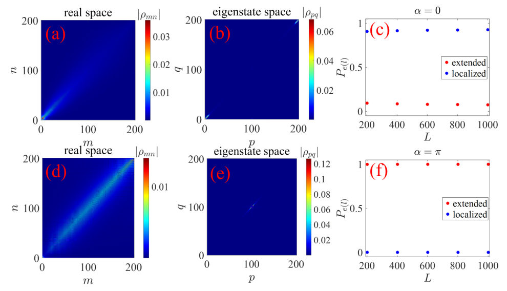
<figcaption class="paper-figure-caption"><b>Fig 3.</b> FIG. 3. Localization properties of the stationary state for α = 0 and α = π. (a),(d) Absolute values of the steady-state density- matrix elements |ρmn| in real space for α = 0 and α = π, respectively. (b),(e) Corresponding density-matrix distributions |ρpq| in the eigenstate basis of the underlying Hamiltonian. (c),(f) Finite-size scaling of the eigenstate localization measure P (l) e for system sizes L = 200, 400, 600, 800, and 1000. The localized and extended states remain well separated over the entire size range for both values of α, with no appreciable systematic drift with increasing L. The results demonstrate the robustness of the localized and extended sectors against the phase...</figcaption>
</figure>
<figure class="paper-figure-card">
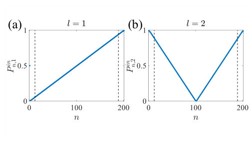
<figcaption class="paper-figure-caption"><b>Fig 4.</b> FIG. 4. (a) The fraction of in-phase pairs P in n,1 for different eigenstates. The black dashed lines mark the extended bulk and localized boundary regions as eigenvalues increase. (b) The fraction of in-phase pairs P in n,2 for different eigenstates.</figcaption>
</figure>
<figure class="paper-figure-card">
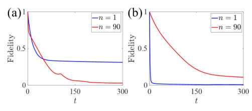
<figcaption class="paper-figure-caption"><b>Fig 5.</b> FIG. 5. Time evolution of the quantum fidelity F[ρ(t), ρ0] after the introduction of dissipation at t = 0 with strength Γ = 1. (a) and (d) correspond to the dissipative phases α = 0 and α = π, respectively. In the figure, the blue solid line is obtained by initializing the system in the extended eigenstate labeled n = 1, and the red solid line by initializing in the localized eigenstate labeled n = 90. The system parameters are L = 201 and l = 2.</figcaption>
</figure>
</div>

<p><strong>Summary.</strong> This theoretical work shows that controlled dissipation can act as a selective filter, allowing researchers to force a non-disordered quantum lattice into a steady state dominated by either localized or extended wave functions. By tuning the phase of the dissipation, the system's asymptotic state can be controlled without altering the underlying Hamiltonian parameters. This establishes a powerful, dissipation-mediated route for state preparation and transport control.</p>
<p><strong>Why it may be interesting.</strong> This work provides a concrete, controllable mechanism to manipulate quantum transport and localization in clean systems using engineered dissipation, which is highly relevant for understanding open quantum dynamics in AMO and quantum optics.</p>
<details>
<summary>Detailed structure</summary>
<p><strong>Main problem.</strong> To demonstrate that engineered dissipation can actively select between localized and extended steady states in a strictly non-disordered lattice, challenging the view that dissipation always causes decoherence.</p>
<p><strong>Main result.</strong> The system's long-time steady state can be deterministically steered toward sectors dominated by either localized or extended Hamiltonian eigenstates solely by tuning the phase ($\alpha$) of a nonlocal dissipative coupling.</p>
<p><strong>Method.</strong> The dynamics are analyzed using the Lindblad master equation, casting the evolution into a linear equation on the Liouville-Fock space. State selection is quantified by analyzing the in-phase pair fraction and using quantum fidelity.</p>
<p><strong>Model / system.</strong> The model is a one-dimensional tight-binding lattice with deterministic, inhomogeneous hopping near the boundaries. The dynamics are governed by the Lindblad master equation, incorporating a nonlocal bond jump operator with a tunable relative phase $\alpha$.</p>
<p><strong>Key observables.</strong> Participation Ratio (PR), Quantum Fidelity ($F$), and the fraction of in-phase site pairs ($P_{n,l}$).</p>
<p><strong>Important parameters / regimes.</strong> The relative phase $\alpha$ and the separation distance $l$ of the dissipative coupling are the primary control parameters.</p>
<p><strong>Assumptions / limitations.</strong> The analysis relies on the Born–Markov approximation.</p>
<p><strong>Figures summary.</strong> Figures illustrate the lattice modulation, the energy spectrum including a Bound State in the Continuum (BIC), and the time evolution of quantum fidelity comparing initial localized vs. extended states under different dissipation phases.</p>
<p><strong>Paper structure.</strong> The paper establishes the model, introduces the dissipation mechanism, analyzes the steady-state selection using phase-matching criteria, and confirms the robustness of the prepared state by monitoring quantum fidelity after the quench.</p>
</details>
<details>
<summary>Abstract</summary>
<p>Dissipation is usually regarded as a source of decoherence that suppresses quantum interference and localization. Here we show that suitably engineered dissipation can instead be used to select localized or extended states in a strictly non-disordered one-dimensional lattice. The underlying clean lattice has spatially inhomogeneous hopping and supports both extended bulk states and localized boundary states, including an algebraically localized bound state in the continuum. We introduce a nonlocal bond jump operator with a tunable relative phase and show that this phase selectively favors eigenstates with different spatial phase correlations. As a result, the long-time density matrix can be steered toward sectors dominated by localized or extended Hamiltonian eigenstates without changing any Hamiltonian parameter. The microscopic origin of the selection is quantified by the fraction of site pairs separated by a distance $l$ that are phase matched with the dissipative channel. We further characterize the dissipative quench through the quantum fidelity and show that the selected character of the steady state can persist after the dissipation is removed. Our results establish phase-selective bond dissipation as a route to controllable state preparation and transport manipulation in non-disordered lattices.</p>
</details>
<p><sub><a href="#top">↑ back to top</a></sub></p>

<p><a id="paper-2608.20291"></a></p>
<h3 id="programmable-cavity-qed-with-a-fiber-integrated-atomic-array"><a href="http://arxiv.org/abs/2608.20291v1">Programmable cavity QED with a fiber-integrated atomic array</a></h3>
<p><strong>Authors:</strong> Stephan Roschinski, Johannes Schabbauer, Franz von Silva-Tarouca, Marvin Holten, Damien Bloch, Julian Léonard<br>
<strong>Type:</strong> experiment · <strong>Category:</strong> other · <strong>PDF:</strong> <a href="https://arxiv.org/pdf/2608.20291v1">https://arxiv.org/pdf/2608.20291v1</a><br>
<strong>Analysis basis:</strong> full PDF text, analyzed in chunks
<strong>Topic relevance:</strong> 🔥 <code>Tavis-Cummings &amp; cavity-many-emitter</code> <strong>4/5</strong> · 🔥 <code>quantum optics experiment</code> <strong>4/5</strong> · <code>QC/QI experiment</code> <strong>3/5</strong> · <code>analog quantum simulation</code> <strong>3/5</strong> · <code>quantum measurements</code> <strong>3/5</strong> · <code>Rydberg arrays</code> <strong>2/5</strong></p>
<div class="figure-strip-hint">↔ Scroll figures horizontally</div>
<div class="paper-figures-scroll">
<figure class="paper-figure-card">
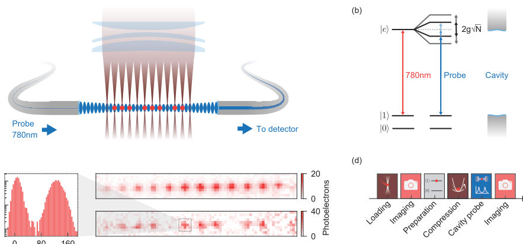
<figcaption class="paper-figure-caption"><b>Fig 1.</b> FIG. 1. Realization of a fiber-integrated atomic array. (a) Schematic of the experimental setup. Two mirrors, fabricated on the end-facets of optical fibers, form a high-finesse optical cavity. Optical tweezers are projected through a microscope objective onto the cavity mode and loaded with 87Rb atoms. A resonant probe beam is coupled into the cavity through one fiber mirror, and the transmitted light is detected on a single-photon counting module through the other. (b) Relevant level scheme for the D2-line of 87Rb, with qubit states |0⟩= |F = 1, mF = 1⟩, |1⟩= |F = 2, mF = 2⟩and excited state |e⟩= |F ′ = 3, mF ′ = 3⟩. For all measurements, irrespective of atom number N, the cavity is...</figcaption>
</figure>
<figure class="paper-figure-card">
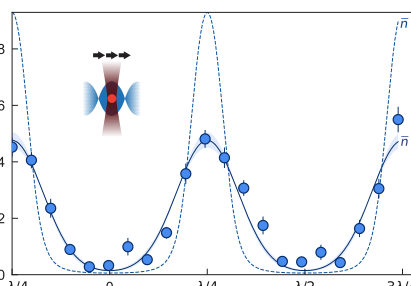
<figcaption class="paper-figure-caption"><b>Fig 2.</b> FIG. 2. Position-controlled cavity blockade. (a) Cavity transmission as the tweezer is translated along the cavity axis. The transmission reflects the local atom-photon cou- pling: atoms near field nodes leave the cavity highly trans- missive, whereas atoms near antinodes suppress transmission through enhanced coupling to the cavity mode. The data agree with an exact finite-temperature theory, taking into ac- count atomic zero-point motion and a mean motional occu- pation in the trap of ¯n = 7(1) (solid line). (b) Repeated measurements of the atomic position along the cavity axis show a variation of 1.1% × λ, well below the spatial period λ/2 of the standing-wave mode.</figcaption>
</figure>
<figure class="paper-figure-card">
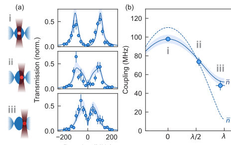
<figcaption class="paper-figure-caption"><b>Fig 3.</b> FIG. 3. Programmable atom-photon coupling. (a) Cavity transmission spectra for three representative atomic positions along the standing-wave mode. By translating a single atom through the cavity field, we continuously tune the coupling from the strong-coupling regime at an antinode (i), where a clear vacuum Rabi splitting appears, through intermediate coupling between node and antinode (ii), to weak coupling near a node (iii), where the spectrum approaches that of an empty cavity. Solid lines are fits with the coupling strength as the only free parameter. (b) Extracted coupling strength ver- sus position. The data agree with an exact finite-temperature theory (solid lines).</figcaption>
</figure>
<figure class="paper-figure-card">
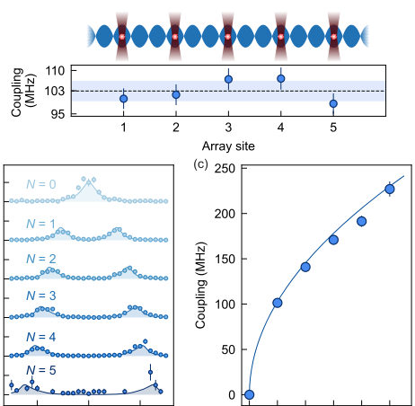
<figcaption class="paper-figure-caption"><b>Fig 4.</b> FIG. 4. Collective enhancement of the coupling. (a) We project a five-site tweezer array with all sites positioned near antinodes and measure the coupling strength of each site in- dividually. The extracted couplings agree within error, es- tablishing the homogeneity of the coupling control. (b) Cav- ity transmission spectra for atom numbers N = 0 −5. As additional tweezers are occupied, the vacuum Rabi splitting increases due to collective enhancement of the atom-cavity coupling. Solid lines are fits to the data with the coupling strength as the only free parameter. (c) Collective coupling strength extracted from the spectra in (b). The solid line shows the expected Tavis-Cummings scaling,...</figcaption>
</figure>
<figure class="paper-figure-card">
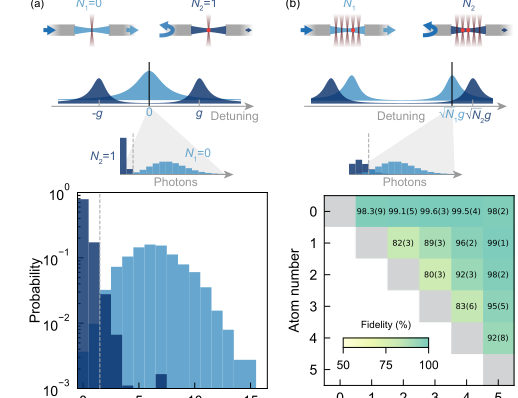
<figcaption class="paper-figure-caption"><b>Fig 5.</b> FIG. 5. Non-destructive atom-number readout. (a) We de- tect the atom number from the suppression of resonant probe light due to cavity blockade: for a single atom, N = 1, the transmission is reduced (dark blue), whereas the uncoupled case, N = 0, remains highly transmissive (light blue). The dashed line shows the photon number for optimal threshold. (b) While resonant probe light is reflected for any atom num- ber N ≥1, probe light that is resonant with the polariton peak for N atoms is sensitive to the respective atom number. Measuring the cavity then at this frequency we extract his- tograms as in (a). Using this procedure we extract fidelities for every pair of atom numbers....</figcaption>
</figure>
</div>

<p><strong>Summary.</strong> This paper reports on the integration of a twelve-site $^{87}	ext{Rb}$ optical tweezer array with a high-cooperativity fiber microcavity to create a programmable cavity QED system. The researchers demonstrated continuous, position-dependent control over atom-photon coupling, enabling both cavity blockade and non-destructive measurement of the number of coupled atoms. This establishes a key building block for scalable quantum network nodes.</p>
<p><strong>Why it may be interesting.</strong> This work provides a concrete, highly controllable experimental realization of cavity QED in a scalable, integrated platform, directly addressing the engineering challenges of coupling atomic arrays to photonic circuits for quantum networking.</p>
<details>
<summary>Detailed structure</summary>
<p><strong>Main problem.</strong> The primary goal is to develop a scalable, programmable architecture for cavity-mediated entanglement generation and many-body cavity QED, specifically targeting fiber-integrated quantum network nodes.</p>
<p><strong>Main result.</strong> The authors successfully demonstrated programmable control over single-atom and collective atom-photon coupling, enabling non-destructive, state-dependent readout of the number of coupled atoms.</p>
<p><strong>Method.</strong> The experiment combines a twelve-site $^{87}	ext{Rb}$ optical tweezer array with a high-cooperativity fiber Fabry-Pérot microcavity, allowing precise spatial control over atom-cavity coupling.</p>
<p><strong>Model / system.</strong> The system uses a fiber-integrated cavity coupled to an array of neutral atoms trapped by optical tweezers. The physics is governed by strong atom-photon interactions, leading to cavity blockade and collective coupling scaling ($\sqrt{N}$).</p>
<p><strong>Key observables.</strong> Vacuum Rabi splitting, cavity transmission $T(x)$, non-destructive atom-number readout fidelity, and position-dependent coupling strength $g(x)$.</p>
<p><strong>Important parameters / regimes.</strong> Cooperativity ($\eta=173$), coupling parameters $(g, \kappa, \gamma)$, and the position-dependent coupling $g(x) = g_0 \cos(kx)$.</p>
<p><strong>Assumptions / limitations.</strong> The analysis accounts for the finite atomic wavefunction spread ($\sigma_x$) using Monte Carlo methods and uses Bayesian inference for uncertainty quantification.</p>
<p><strong>Figures summary.</strong> Figures illustrate the schematic setup, position-controlled cavity blockade via transmission modulation, tunable coupling strength via Rabi splitting measurements, and collective enhancement showing $\sqrt{N}$ scaling.</p>
<p><strong>Paper structure.</strong> The paper progresses by first establishing the physical platform, demonstrating programmable single-atom control (blockade), then extending this to collective coupling measurements, and finally utilizing the collective response for non-destructive atom-number readout.</p>
</details>
<details>
<summary>Abstract</summary>
<p>Strong atom-photon interactions in optical cavities are a key resource for quantum information processing, quantum networking, and the exploration of quantum optical effects. Optical tweezer arrays offer scalable, site-resolved control of neutral atoms, but their integration with high-cooperativity cavity QED systems remains challenging. Here we combine a twelve-site $^{87}$Rb optical tweezer array with a high-cooperativity fiber Fabry-Pérot microcavity. The array is positioned within the cavity mode and individual sites are controlled with subwavelength precision, enabling continuous tuning of the single-atom coupling strength via deterministic displacement through the standing-wave field. For up to five atoms coupled to the cavity, we measure collectively enhanced vacuum Rabi splitting and implement cavity-based non-destructive readout of the number of coupled atoms. These results establish a scalable architecture for cavity-mediated entanglement generation and many-body cavity QED with single-atom control, and they lay the foundation for fiber-integrated quantum network nodes.</p>
</details>
<p><sub><a href="#top">↑ back to top</a></sub></p>

<p><a id="paper-2608.19592"></a></p>
<h3 id="dynamic-pseudogap-model"><a href="http://arxiv.org/abs/2608.19592v1">Dynamic Pseudogap Model</a></h3>
<p><strong>Authors:</strong> E. Z. Kuchinskii, M. V. Sadovskii<br>
<strong>Type:</strong> theory · <strong>Category:</strong> disordered systems and neural networks · <strong>PDF:</strong> <a href="https://arxiv.org/pdf/2608.19592v1">https://arxiv.org/pdf/2608.19592v1</a><br>
<strong>Analysis basis:</strong> full PDF text, analyzed in chunks
<strong>Topic relevance:</strong> 🔥 <code>Keldysh / 2PI / non-Gaussian methods</code> <strong>4/5</strong> · <code>driven-dissipative phase transition</code> <strong>3/5</strong> · <code>methods for driven-dissipative</code> <strong>3/5</strong> · <code>non-equilibrium universality</code> <strong>3/5</strong> · <code>analog quantum simulation</code> <strong>1/5</strong> · <code>correlated / nonlocal dissipation</code> <strong>1/5</strong> · <code>quantum measurements</code> <strong>1/5</strong> · <code>scars &amp; prethermalization</code> <strong>1/5</strong></p>
<div class="figure-strip-hint">↔ Scroll figures horizontally</div>
<div class="paper-figures-scroll">
<figure class="paper-figure-card">
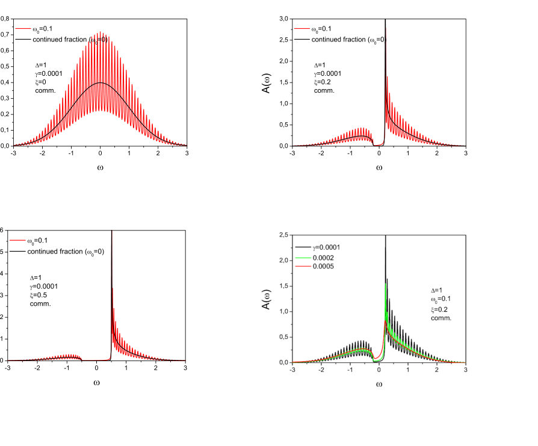
<figcaption class="paper-figure-caption"><b>Fig 1.</b> FIG. 1. Spectral density in commensurate case and ω0 = 0.1 for different values of electron energy ξ. The last panel shows γ dependence of spectral density at ξ = 0.2. Black curves represent the results for spectral density obtained for static model (ω0 = 0) from exact continued fractions. All energies are given in units of ∆.</figcaption>
</figure>
<figure class="paper-figure-card">
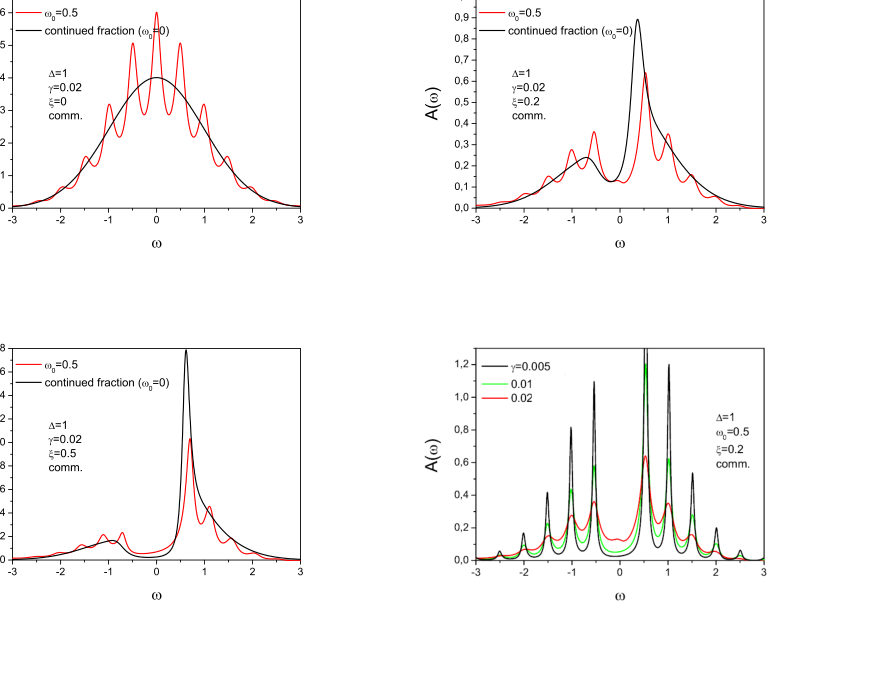
<figcaption class="paper-figure-caption"><b>Fig 2.</b> FIG. 2. Spectral density in commensurate case and ω0 = 0.5 for different values of electron energy ξ. The last panel shows γ dependence of spectral density at ξ = 0.2. Black curves represent the results for spectral density obtained for static model (ω0 = 0) from exact continued fractions. All energies are given in units of ∆.</figcaption>
</figure>
<figure class="paper-figure-card">
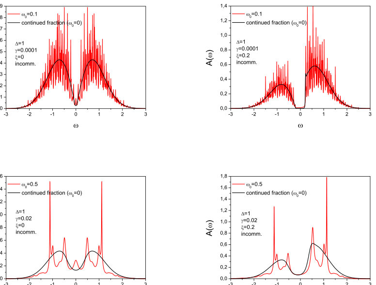
<figcaption class="paper-figure-caption"><b>Fig 3.</b> FIG. 3. Spectral density for incommensurate case and ω0 = 0.1, 0.5 for different values of electron energy ξ. Black curvesrep- resent the results for spectral density obtained for static model (ω0 = 0) from exact continued fractions. All energies are given in units of ∆.</figcaption>
</figure>
<figure class="paper-figure-card">
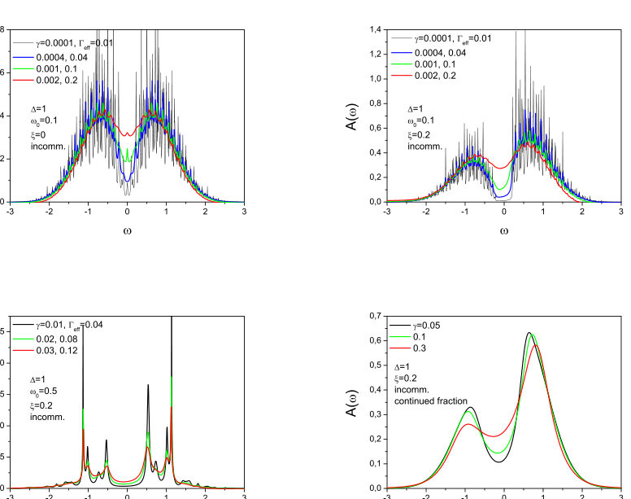
<figcaption class="paper-figure-caption"><b>Fig 4.</b> FIG. 4. Dependence of the spectral density for incommensurate case on γ for different values of ω0 and ξ. The last panel shows spectral density obtained for static model (ω0 = 0) from exact continued fractions for large enough values of γ. All energies are given in units of ∆.</figcaption>
</figure>
<figure class="paper-figure-card">
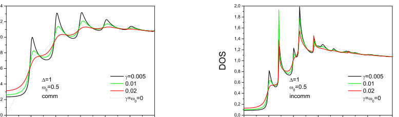
<figcaption class="paper-figure-caption"><b>Fig 5.</b> FIG. 5. Density of states (in units of free electron DOS) for for commensurate (left) and incommensurate (right) cases and typical values of ω0 and γ. Dashed lines represent exact behavior for static case ω0 = 0 and γ = 0 (Appendix D).</figcaption>
</figure>
</div>

<p><strong>Summary.</strong> This work establishes a microscopic theory for pseudogap formation driven by dynamic fluctuations in the nesting vector Q. It derives the single-particle Green's function using a double-series expansion, predicting a critical crossover between a coherent dynamic sideband regime and a quasistatic fluctuating-gap regime. This framework is valuable for understanding how quantum coherence breaks down in strongly correlated materials like cuprate superconductors.</p>
<p><strong>Why it may be interesting.</strong> The concept of a crossover between coherent and decoherent dynamics, governed by a dynamically generated scale ($\Gamma_{
m eff}$), is highly relevant to open quantum systems and non-equilibrium dynamics, providing a framework for understanding how quantum coherence is lost in strongly fluctuating environments.</p>
<details>
<summary>Detailed structure</summary>
<p><strong>Main problem.</strong> The paper develops a microscopic theory to describe the formation of a pseudogap in electronic systems driven by dynamic fluctuations in the nesting vector Q.</p>
<p><strong>Main result.</strong> It predicts a crossover between two distinct pseudogap regimes: a coherent regime ($\omega_0 > \Gamma_{
m eff}$) and a quasistatic regime ($\Gamma_{
m eff} \gtrsim \omega_0$).</p>
<p><strong>Method.</strong> The analysis uses a double-series representation for the single-particle Green's function, derived via an Abelian approximation to the exact SU(2) time evolution.</p>
<p><strong>Model / system.</strong> The system models electrons coupled to a classical Gaussian random field representing fluctuations (like CDW/SDW order parameters) near a nested Fermi surface. The dynamics are governed by an effective SU(2) pseudospin structure.</p>
<p><strong>Key observables.</strong> Single-particle Green's function, spectral density, and density of states exhibiting dynamically generated sidebands.</p>
<p><strong>Important parameters / regimes.</strong> Characteristic oscillation frequency ($\omega_0$), damping rate ($\gamma$), and the dynamically generated decoherence scale ($\Gamma_{
m eff}$).</p>
<p><strong>Assumptions / limitations.</strong> The theory relies on an Abelian (commuting) approximation to the time evolution, and the fluctuating order parameter is treated as a classical Gaussian random field.</p>
<p><strong>Figures summary.</strong> The notes mention presenting detailed numerical calculations for the electron spectral density and density of states across different model parameters to confirm the predicted crossover.</p>
<p><strong>Paper structure.</strong> The structure moves from formulating the microscopic Hamiltonian involving fluctuating fields to deriving the Green's function via double-series expansions, analyzing the resulting crossover between coherent and quasistatic limits, and comparing results for commensurate vs. incommensurate fluctuations.</p>
</details>
<details>
<summary>Abstract</summary>
<p>We formulate a microscopic theory of pseudogap formation generated by dynamic finite nesting vector ${\bf Q}$ fluctuations with characteristic oscillation frequency $ω_0$, and damping $γ$. Starting from a Hamiltonian describing electrons coupled to a classical Gaussian random field, we derive explicit double-series representations of the single-particle Green's function within an Abelian (commuting) approximation to the exact SU(2) time evolution. The resulting propagator naturally acquires a generalized Bogoliubov structure in which every stochastic scattering history is characterized by an effective dynamic gap, leading to a coherent superposition of dynamically broadened sidebands with complex Poisson weights. A central result of the theory is the emergence of a dynamically generated decoherence scale $Γ_{\rm eff}$ governing the crossover between two qualitatively different pseudogap regimes. For $ω_0>Γ_{\rm eff}$ the fluctuating field is resolved coherently and the double-series representation provides a controlled description of dynamic sideband formation. Conversely, when $Γ_{\rm eff}\gtrsimω_0$, coherence is progressively lost and the theory crosses over to the quasistatic fluctuating-gap regime described by the exact continued-fraction solution. The coherent and quasistatic descriptions are therefore interpreted as two complementary asymptotic limits of the same microscopic dynamic pseudogap model. The detailed results of numerical calculations for electron spectral density and density of states are presented for different sets of model parameters confirming this crossover over the broad range of model parameters.</p>
</details>
<p><sub><a href="#top">↑ back to top</a></sub></p>

<p><a id="paper-2608.20168"></a></p>
<h3 id="quantum-dissipative-paraelectricity"><a href="http://arxiv.org/abs/2608.20168v1">Quantum Dissipative Paraelectricity</a></h3>
<p><strong>Authors:</strong> A. Cano<br>
<strong>Type:</strong> theory · <strong>Category:</strong> statistical mechanics · <strong>PDF:</strong> <a href="https://arxiv.org/pdf/2608.20168v1">https://arxiv.org/pdf/2608.20168v1</a><br>
<strong>Analysis basis:</strong> full PDF text, analyzed in chunks
<strong>Topic relevance:</strong> 🔥 <code>driven-dissipative phase transition</code> <strong>4/5</strong> · <code>methods for driven-dissipative</code> <strong>3/5</strong> · <code>non-equilibrium universality</code> <strong>3/5</strong> · <code>Keldysh / 2PI / non-Gaussian methods</code> <strong>2/5</strong> · <code>quantum measurements</code> <strong>2/5</strong> · <code>Frenkel-Kontorova</code> <strong>1/5</strong> · <code>correlated / nonlocal dissipation</code> <strong>1/5</strong> · <code>scars &amp; prethermalization</code> <strong>1/5</strong></p>
<div class="figure-strip-hint">↔ Scroll figures horizontally</div>
<div class="paper-figures-scroll">
<figure class="paper-figure-card">
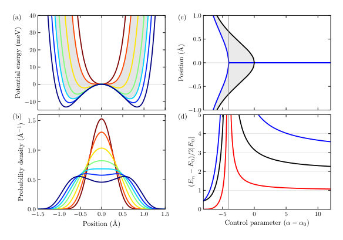
<figcaption class="paper-figure-caption"><b>Fig 1.</b> FIG. 1. (a) Representative shapes of the Razavy potential (1) in the single-well (α &gt; αcl c ) and double-well (α &lt; αcl c ) regimes. The gray region corresponds to the quantum paraelectric regime (αq c &lt; α &lt; αcl c ). (b) Ground-state probability density ρ0(u) across the regimes. The density remains peaked at u = 0 throughout the quantum paraelectric phase and bifurcates only at αq c, below the classical critical point αcl c . (c) Locus of the probability-density maximum as a function of α −αcl c , illustrating the ground-state bifurcation and its separation from the classical transition (blue vs black curves respectively). (d) Relative energies of the three lowest eigenstates vs. α. The...</figcaption>
</figure>
<figure class="paper-figure-card">
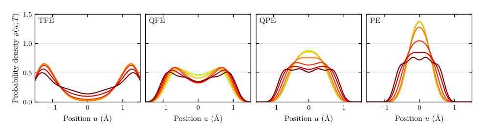
<figcaption class="paper-figure-caption"><b>Fig 2.</b> FIG. 2. Thermal probability density ρ(x; T) in the tunneling ferroelectric (TFE), quantum ferroelectric (QFE), quantum para- electric (QPE), and standard paraelectric (PE) regimes. Within each panel, curves correspond to temperatures logarithmically equally spaced up to kBT = E3. In all cases ρ(x; T) remains symmetric, reflecting the symmetry of the equilibrium density matrix. The central density ρ(0; T) increases with temperature in the TFE panel but decreases in panel QPE, providing an observable distinction between these two ferroelectric regimes.</figcaption>
</figure>
<figure class="paper-figure-card">
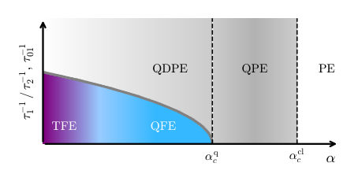
<figcaption class="paper-figure-caption"><b>Fig 3.</b> FIG. 3. Schematic phase diagram as a function of the con- trol parameter α and the environmental coupling strength (parametrized by τ −1 1 relative to τ −1 2 and τ −1 01 ). The stan- dard paraelectric (PE) phase is superseded by the quantum paraelectric (QPE) phase between αcl c and αq c. Below αq c in the ferroelectric region, the crossover between quantum fer- roelectric (QFE) and tunneling ferroelectric (TFE) regimes is determined by the emergence of quasi-degenerate doublets. Strong environmental coupling extends the effective paraelec- tric region by sustaining the quantum dissipative paraelectric (QDPE) phase in the presence of a bifurcated ground-state probability density.</figcaption>
</figure>
</div>

<p><strong>Summary.</strong> This paper analyzes quantum phase transitions in ferroelectrics modeled by a double-well potential, showing that spontaneous symmetry breaking cannot be determined by the Hamiltonian alone. It introduces the concept of quantum dissipative paraelectricity, a regime where environmental coupling suppresses observable symmetry breaking even when the potential suggests otherwise.</p>
<p><strong>Why it may be interesting.</strong> The explicit inclusion of dissipation and environmental coupling to determine the conditions for symmetry breaking is highly relevant to open quantum systems, providing a framework to understand how decoherence or coupling can stabilize or suppress ordered phases.</p>
<details>
<summary>Detailed structure</summary>
<p><strong>Main problem.</strong> The paper investigates whether spontaneous symmetry breaking in a quantum system with a double-well potential depends solely on the potential landscape or also requires kinetic effects and coupling to an environment.</p>
<p><strong>Main result.</strong> Observable symmetry breaking requires explicit coupling to an environment, leading to the identification of a 'quantum dissipative paraelectricity' regime where symmetry breaking is suppressed during ground state evolution.</p>
<p><strong>Method.</strong> The study employs analytical solutions for a quasi-exactly solvable model, analyzing the time evolution of the probability density under environmental coupling.</p>
<p><strong>Model / system.</strong> The system models ferroelectrics using an order parameter $u$ governed by a Razavy potential. The analysis distinguishes between quantum paraelectric, quantum ferroelectric, and tunneling ferroelectric regimes.</p>
<p><strong>Key observables.</strong> Ground-state probability density $
ho_0(u)$, thermal probability density $
ho(u; T)$, and the expectation value $\langle u 
angle$.</p>
<p><strong>Important parameters / regimes.</strong> The control parameter $\alpha$, the critical point $\alpha_{q_c}$, and the characteristic time scales associated with relaxation ($ au_1,   au_2$) and oscillation ($ au_{01}$).</p>
<p><strong>Assumptions / limitations.</strong> The analysis assumes the necessity of coupling to an environment to achieve observable symmetry breaking, and it utilizes approximations regarding the time evolution of the probability density.</p>
<p><strong>Figures summary.</strong> Figures illustrate the Razavy potential, the ground-state probability density bifurcation, and the thermal probability density across various regimes (TFE, QFE, QPE, PE), showing symmetry preservation in all cases.</p>
<p><strong>Paper structure.</strong> The paper progresses by first establishing the problem concerning symmetry breaking dependence, then defining the QPE and QFE regimes using analytical solutions, and finally extending the analysis to include environmental coupling to derive the concept of quantum dissipative paraelectricity.</p>
</details>
<details>
<summary>Abstract</summary>
<p>Whether a quantum system with a double-well effective potential undergoes spontaneous symmetry breaking depends not only on the potential landscape but also on the kinetics and the coupling with additional degrees of freedom. Here we introduce a quasi-exactly solvable model to study this problem in the context of ferroelectrics, with results that apply to a broad class of quantum phase transitions. Exploiting the analytical solutions, we provide a strict definition of the quantum paraelectric regime and identify a distinct quantum ferroelectric regime in which symmetry breaking can be realized without tunneling features. We then show that explicit symmetry breaking cannot be inferred from the order-parameter Hamiltonian alone, but requires additional couplings. This leads us to identify a regime of \emph{quantum dissipative paraelectricity}, in which observable symmetry breaking is suppressed during the evolution toward the ground state, even when the double-well structure dominates over zero-point quantum fluctuations.</p>
</details>
<p><sub><a href="#top">↑ back to top</a></sub></p>

<p><a id="paper-2608.20310"></a></p>
<h3 id="signatures-of-a-light-induced-exciton-condensate-exhibiting-bec-bcs-crossover"><a href="http://arxiv.org/abs/2608.20310v1">Signatures of a light-induced exciton condensate exhibiting BEC-BCS crossover</a></h3>
<p><strong>Authors:</strong> Khanh Duy Nguyen, Gabriele Berruto, Yunhe Bai, Thomas Marchese, Woojoo Lee, Haoran Lin, Jiangang Yang, Chong Liu, Y. Shirley Meng, Shuolong Yang<br>
<strong>Type:</strong> both · <strong>Category:</strong> quantum gases · <strong>PDF:</strong> <a href="https://arxiv.org/pdf/2608.20310v1">https://arxiv.org/pdf/2608.20310v1</a><br>
<strong>Analysis basis:</strong> full PDF text, analyzed in chunks
<strong>Topic relevance:</strong> 🔥 <code>analog quantum simulation</code> <strong>4/5</strong> · <code>Keldysh / 2PI / non-Gaussian methods</code> <strong>3/5</strong> · <code>driven-dissipative phase transition</code> <strong>3/5</strong> · <code>non-equilibrium universality</code> <strong>3/5</strong> · <code>methods for driven-dissipative</code> <strong>2/5</strong> · <code>quantum optics experiment</code> <strong>2/5</strong></p>
<div class="figure-strip-hint">↔ Scroll figures horizontally</div>
<div class="paper-figures-scroll">
<figure class="paper-figure-card">
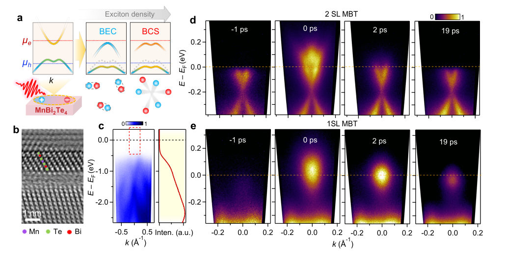
<figcaption class="paper-figure-caption"><b>Fig 1.</b> Fig. 1| MBE-grown MnBi2Te4 (MBT) as a platform to study excitonic states. a, Schematic of the</figcaption>
</figure>
<figure class="paper-figure-card">
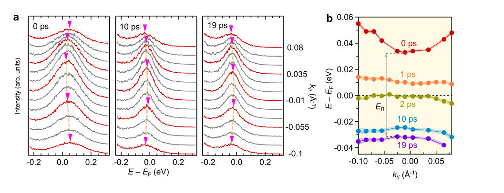
<figcaption class="paper-figure-caption"><b>Fig 2.</b> Fig. 2| Formation of excitons evidenced by the dispersion evolution. a, Energy distribution curve (EDC)</figcaption>
</figure>
<figure class="paper-figure-card">
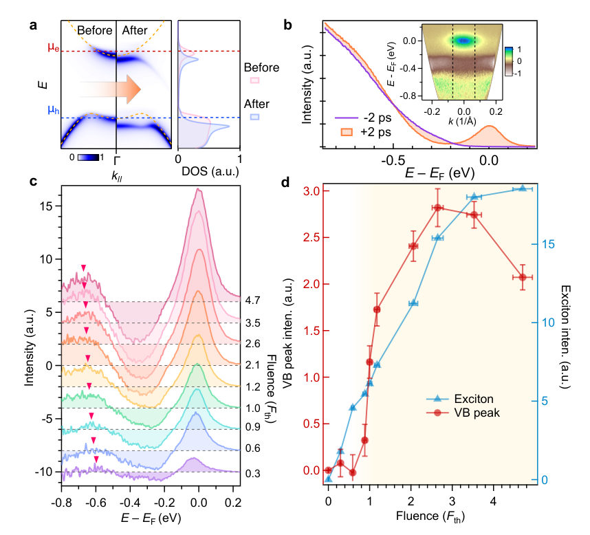
<figcaption class="paper-figure-caption"><b>Fig 3.</b> Fig. 3| VB peak as a spectroscopic signature of exciton condensation. a, A toy model for the collective</figcaption>
</figure>
<figure class="paper-figure-card">
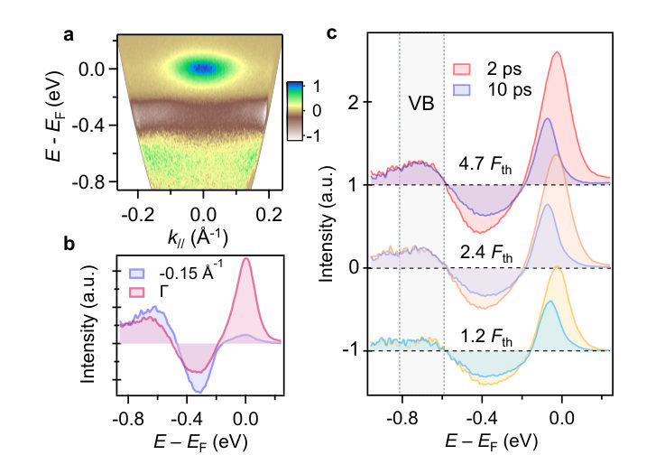
<figcaption class="paper-figure-caption"><b>Fig 4.</b> Fig. 4| Momentum- and time-dependence of the transient VB peak. a, The differential ARPES</figcaption>
</figure>
<figure class="paper-figure-card">
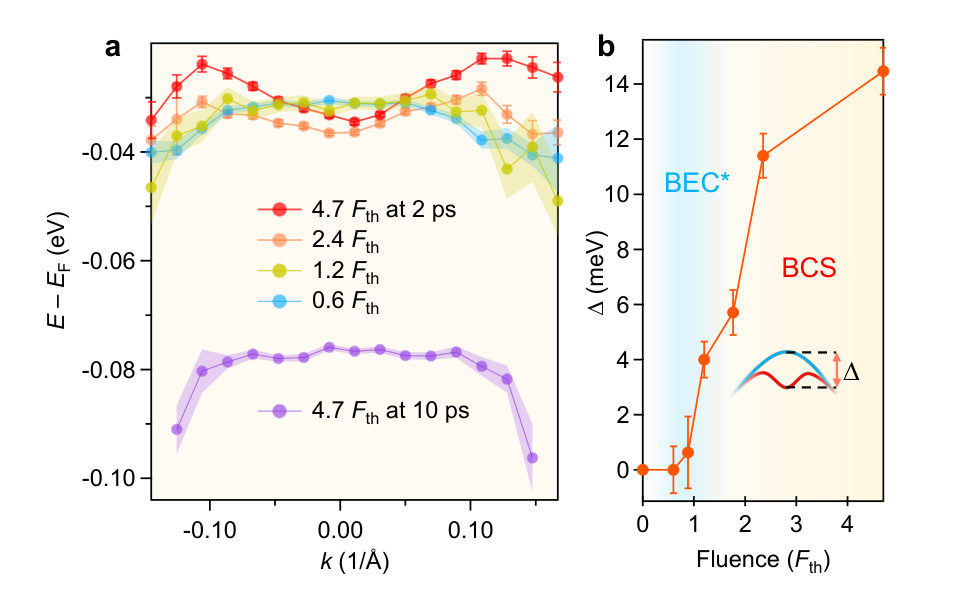
<figcaption class="paper-figure-caption"><b>Fig 5.</b> Fig. 5| Signatures of transient BEC-BCS crossover in the exciton condensate. a, Extracted dispersions</figcaption>
</figure>
</div>

<p><strong>Summary.</strong> This paper reports experimental evidence from trARPES on monolayer MnBi2Te4 demonstrating the formation of a light-induced exciton condensate. By observing sharp, threshold-dependent spectral features and a characteristic 'camel-back' dispersion, the authors argue for a BEC-BCS crossover mechanism, establishing the material as a model system for studying excitonic quantum phenomena.</p>
<p><strong>Why it may be interesting.</strong> The direct connection drawn between solid-state excitons, topological materials, and the fundamental physics of BEC-BCS crossover makes this highly relevant to quantum gas research, particularly in realizing tunable quantum simulators.</p>
<details>
<summary>Detailed structure</summary>
<p><strong>Main problem.</strong> The study aims to experimentally and theoretically demonstrate the signatures of a light-induced, non-equilibrium exciton condensate and its associated BEC-BCS crossover in a solid-state system.</p>
<p><strong>Main result.</strong> The authors observed a threshold-dependent sharpening of the valence band and a 'camel-back' dispersion, consistent with the Berezinskii-Kosterlitz-Thouless transition and the BEC-BCS crossover in the exciton condensate framework.</p>
<p><strong>Method.</strong> The work combines time- and angle-resolved photoemission spectroscopy (trARPES) experiments with theoretical modeling based on phase-fluctuation theories analogous to 2D superconductivity.</p>
<p><strong>Model / system.</strong> The physical system is monolayer MnBi2Te4, a magnetic topological insulator. The theoretical framework models the exciton condensation using concepts from 2D Bose gases, specifically invoking the BKT transition and the BEC-BCS crossover.</p>
<p><strong>Key observables.</strong> Hole-like exciton dispersion, energy-domain sharpening in the valence band, and the development of a 'camel-back-shaped dispersion' at higher pump fluences.</p>
<p><strong>Important parameters / regimes.</strong> Threshold pump fluence (0.84 mJ/cm2), exciton binding energy ($\sim 60$ meV), and the critical density related to the Nelson-Kosterlitz criterion.</p>
<p><strong>Assumptions / limitations.</strong> The delayed, nonlinear response is assumed to be due to exciton condensation, ruling out conventional transient field effects or simple carrier-induced band shifts.</p>
<p><strong>Figures summary.</strong> Figures illustrate the time evolution of the transient band dispersion, showing the transition from electron-like to hole-like exciton features, and depict the fluence dependence of the valence band peak as a signature of condensation.</p>
<p><strong>Paper structure.</strong> The paper progresses by first identifying the experimental challenge (observing non-equilibrium excitons), presenting the trARPES evidence for condensation onset and crossover, and then supporting this evidence with theoretical modeling based on phase-fluctuation theories.</p>
</details>
<details>
<summary>Abstract</summary>
<p>Exciton condensates provide a platform to study quasiparticle pairing, Bose-Einstein condensation-Bardeen-Cooper-Schrieffer (BEC-BCS) crossover, and excitonic topological phenomena. Achieving a nonequilibrium exciton condensate allows the ultimate tunability of these emergent phenomena. Yet, evidence of a light-induced, nonequilibrium exciton condensate and its BEC-BCS crossover remains elusive. Here, we use time- and angle-resolved photoemission spectroscopy to demonstrate signatures of a non-equilibrium exciton condensate and its BEC-BCS crossover in monolayer MnBi2Te4. Following optical excitation, a distinctive hole-like dispersion representing excitons emerges and persists for &gt;20 ps. Strikingly, energy-domain sharpening in the valence band occurs 2 ps after time zero and exhibits a sharp onset at a threshold pump fluence of 0.84 mJ/cm2. The delayed and strongly nonlinear response is difficult to reconcile with transient field effects or conventional carrier-induced band shifts but is consistent with a model of exciton condensation governed by a Berezinskii-Kosterlitz-Thouless transition. The estimated threshold exciton density agrees quantitatively with the Nelson-Kosterlitz critical density. At higher fluences, the exciton feature develops a camel-back-shaped dispersion, consistent with the BEC-BCS crossover in the condensate framework. Our work establishes ultrathin MnBi2Te4 as a model system for studying nonequilibrium exciton condensates with a connection to superconductivity and exciton-driven topological phases.</p>
</details>
<p><sub><a href="#top">↑ back to top</a></sub></p>

<p><a id="paper-2608.20100"></a></p>
<h3 id="fluctuation-controlled-asymmetric-kinetics-in-metal-insulator-transitions"><a href="http://arxiv.org/abs/2608.20100v1">Fluctuation-Controlled Asymmetric Kinetics in Metal-Insulator Transitions</a></h3>
<p><strong>Authors:</strong> Tapas Bar, David Pesquera, Timm Swoboda, Arnau Villalobos-Martin, Cristian Rodriguez-Tinoco, Pol Lloveras, Marianna Sledzinska, Javier Rodriguez-Viejo<br>
<strong>Type:</strong> both · <strong>Category:</strong> statistical mechanics · <strong>PDF:</strong> <a href="https://arxiv.org/pdf/2608.20100v1">https://arxiv.org/pdf/2608.20100v1</a><br>
<strong>Analysis basis:</strong> full PDF text, analyzed in chunks
<strong>Topic relevance:</strong> 🔥 <code>non-equilibrium universality</code> <strong>4/5</strong> · <code>driven-dissipative phase transition</code> <strong>3/5</strong> · <code>Keldysh / 2PI / non-Gaussian methods</code> <strong>2/5</strong> · <code>methods for driven-dissipative</code> <strong>2/5</strong> · <code>Frenkel-Kontorova</code> <strong>1/5</strong> · <code>analog quantum simulation</code> <strong>1/5</strong> · <code>correlated / nonlocal dissipation</code> <strong>1/5</strong> · <code>quantum measurements</code> <strong>1/5</strong> · <code>scars &amp; prethermalization</code> <strong>1/5</strong></p>
<div class="figure-strip-hint">↔ Scroll figures horizontally</div>
<div class="paper-figures-scroll">
<figure class="paper-figure-card">
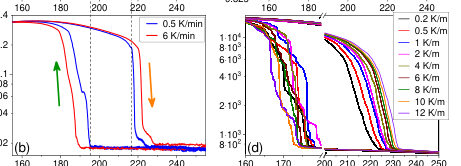
<figcaption class="paper-figure-caption"><b>Fig 1.</b> FIG. 1. (a) DSC traces of a 1T-TaS2 single crystal mea- sured during heating and cooling at scanning rates of 0.5 K/min and 6 K/min. (Inset) Expanded view of the en- dothermic and exothermic peaks at the slower rate. (b) Temperature-dependent resistance measured under identi- cal ramp conditions, showing corresponding shifts in tran- sition temperatures. (c) Reflectivity measurements reveal- ing sharper, avalanche-like transitions during cooling com- pared to smoother behavior during heating. (d) Temperature- dependent resistance of a thin layer (thickness d = 30 nm), demonstrating pronounced asymmetric kinetics at reduced dimensionality. The data collectively demonstrate a pro- nounced...</figcaption>
</figure>
<figure class="paper-figure-card">
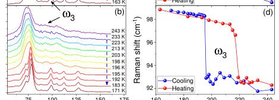
<figcaption class="paper-figure-caption"><b>Fig 2.</b> FIG. 2. Temperature-dependent low-frequency Raman spec- tra of bulk 1T-TaS2 during (a) heating and (b) cooling. (c, d) Temperature dependence of the central frequencies of the ω2 and ω3 Raman modes, showing distinct evolution during heating and cooling. Measurements were performed under quasi-isothermal conditions (∆T &lt; 0.1 K), with a tempera- ture sweep rate of 0.2 K/min between successive temperature set points near the transition.</figcaption>
</figure>
<figure class="paper-figure-card">
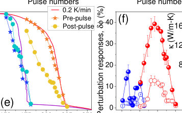
<figcaption class="paper-figure-caption"><b>Fig 3.</b> FIG. 3. Phase-ordering dynamics at different temperatures during isothermal cooling (a) and heating (b) before and after externally induced local thermal perturbations introduced at t = 290 s by applying 500 current pulses across a 30 nm thick layer. The temperature and pulsing profiles can be found in the End Matter. The evolution of the phase fraction as a func- tion of pulse number during the pulsing process is shown in (c) and (d). The data reveal distinct responses to nonequilib- rium thermal perturbations controlled by the pulsing currents (IOn/IOff = 1mA/10µA) during the cooling and heating. (e) Pre-pulsing (⋆) and post-pulsing (•) steady-state phase frac- tions, ϕS P re and ϕS P...</figcaption>
</figure>
<figure class="paper-figure-card">

<figcaption class="paper-figure-caption"><b>Fig 4.</b> FIG. 4. Temperature profile of the phase-ordering measure- ments during cooling (a) and heating (b). At each isothermal temperature, the system was perturbed by applying 500 cur- rent pulses approximately 290 s after reaching the set point. Panels (c) and (d) show the corresponding pulsing profiles (1mA/10µA) for cooling and heating perturbations, respec- tively. The pulse duration and off-time were 1 ms.</figcaption>
</figure>
<figure class="paper-figure-card">

<figcaption class="paper-figure-caption"><b>Fig 5.</b> FIG. 5. Normalized Raman shifts of the ω2 and ω3 modes, representing the insulating phase fraction ϕ (a). The phase fraction obtained from the Landau ϕ6 free energy [Eq. 2] is overlaid with the experimental data. (b) Landau ϕ6 free en- ergy F(ϕ) at representative temperatures, illustrating the evo- lution of metastable states; Tc and Th denote the steady-state transition temperatures during cooling and heating, respec- tively. (c) Temperature dependence of the order parameter ϕ for different noise strengths, calculated using TDGL dynam- ics [Eq. 4]. (d) Schematic of barrier-crossing phase-ordering dynamics when the perturbation strength becomes compara- ble to the free-energy barrier (∆Ef)...</figcaption>
</figure>
</div>

<p><strong>Summary.</strong> This work reports on the observation of asymmetric kinetics during the Metal-Insulator Transition in 1T-TaS2, showing distinct avalanche-like behavior upon cooling versus smooth evolution upon heating. By combining transport measurements with theoretical modeling based on the Ginzburg-Landau theory, the authors establish that this kinetic asymmetry is governed by the unequal degrees of athermality between the two transition branches. This provides a general framework for understanding pathway selection in first-order phase transitions.</p>
<p><strong>Why it may be interesting.</strong> The framework linking kinetic asymmetry directly to the degree of athermality in first-order phase transitions provides a general principle applicable to many non-equilibrium many-body systems, which is relevant for understanding quench dynamics in quantum many-body models.</p>
<details>
<summary>Detailed structure</summary>
<p><strong>Main problem.</strong> The paper investigates the origin of kinetic asymmetry observed during first-order Metal-Insulator Transitions (MITs) in correlated materials.</p>
<p><strong>Main result.</strong> The kinetic asymmetry is fundamentally controlled by the unequal degrees of athermality between the forward (heating) and reverse (cooling) transformation branches.</p>
<p><strong>Method.</strong> The study combines experimental measurements (transport, calorimetry, Raman spectroscopy) with theoretical modeling using the Time-Dependent Ginzburg-Landau equation.</p>
<p><strong>Model / system.</strong> The primary system is the layered correlated material 1T-TaS2, which undergoes an MIT associated with Charge-Density-Wave (CDW) states. The dynamics are modeled using a Landau free-energy functional and the TDGL equation.</p>
<p><strong>Key observables.</strong> Asymmetric kinetics in phonon modes (Raman shifts), avalanche-like vs. continuous phase evolution, and the degree of response to non-equilibrium thermal perturbations.</p>
<p><strong>Important parameters / regimes.</strong> The degree of athermality, the strength of thermal perturbations (Joule heating), and the parameters governing the Landau free energy ($\phi^6$ term).</p>
<p><strong>Assumptions / limitations.</strong> The analysis assumes that the kinetic asymmetry is governed by the differing response of the system's phase-ordering dynamics to thermal fluctuations during heating versus cooling.</p>
<p><strong>Figures summary.</strong> Figures show DSC curves, resistance changes, and Raman spectra demonstrating distinct, asymmetric evolution during cooling (avalanche-like) versus heating (smooth). Simulations illustrate the dependence of phase evolution on noise strength.</p>
<p><strong>Paper structure.</strong> The paper establishes the experimental observation of kinetic asymmetry in 1T-TaS2, uses local probes and thermal pulsing to distinguish intrinsic effects from percolation, and finally models the dynamics using the TDGL equation to show that unequal athermality dictates the pathway selection.</p>
</details>
<details>
<summary>Abstract</summary>
<p>We report asymmetric kinetics in thermally driven metal-insulator transitions (MITs) in 1T-TaS$_2$. Using combined transport, calorimetric, and Raman measurements, we show that the transition proceeds via burst-like avalanches during cooling, while remaining continuous during heating. Although bulk transport is masked by percolative conduction, local probes and thermal measurements reveal intrinsic asymmetry in the transformation pathways. Using controlled nonequilibrium thermal perturbations generated by pulsed Joule heating, we demonstrate that the phase-ordering dynamics remains strongly athermal during cooling, whereas during heating fluctuations progressively overcome nucleation barriers, leading to a smooth transformation. The distinct responses to thermal perturbations indicate different degrees of athermality of the two hysteresis branches, which govern the transformation pathways and give rise to the observed kinetic asymmetry. These results establish a general framework in which the degree of athermality controls pathway selection in first-order phase transitions.</p>
</details>
<p><sub><a href="#top">↑ back to top</a></sub></p>

<p><a id="paper-2608.19403"></a></p>
<h3 id="rescaled-mandelstam-tamm-characterization-of-discrete-time-crystal-response-in-a-disordered-floquet-ising-chain"><a href="http://arxiv.org/abs/2608.19403v1">Rescaled Mandelstam Tamm characterization of discrete time crystal response in a disordered Floquet Ising chain</a></h3>
<p><strong>Authors:</strong> Abrar Ahmed Naqash, Salman Sajad Wani, Saif Al-Kuwari<br>
<strong>Type:</strong> theory · <strong>Category:</strong> disordered systems and neural networks · <strong>PDF:</strong> <a href="https://arxiv.org/pdf/2608.19403v1">https://arxiv.org/pdf/2608.19403v1</a><br>
<strong>Analysis basis:</strong> full PDF text, analyzed in chunks
<strong>Topic relevance:</strong> 🔥 <code>driven-dissipative phase transition</code> <strong>4/5</strong> · <code>non-equilibrium universality</code> <strong>3/5</strong> · <code>analog quantum simulation</code> <strong>2/5</strong> · <code>methods for driven-dissipative</code> <strong>2/5</strong> · <code>scars &amp; prethermalization</code> <strong>2/5</strong> · <code>Frenkel-Kontorova</code> <strong>1/5</strong> · <code>Keldysh / 2PI / non-Gaussian methods</code> <strong>1/5</strong> · <code>quantum measurements</code> <strong>1/5</strong></p>
<div class="figure-strip-hint">↔ Scroll figures horizontally</div>
<div class="paper-figures-scroll">
<figure class="paper-figure-card">

<figcaption class="paper-figure-caption"><b>Fig 1.</b> FIG. 1. Four-size validation of the MT normalization at n = 100 on the native 40 × 40 L = 16 parameter grid. Each native or aligned cell contains Ndis = 50 disorder realizations for L ∈S = {8, 10, 12, 16}. For the four-size quantities in panels (a) and (b), the L = 8, 10, 12 records are bilinearly aligned from their native 39 × 39 axes to the L = 16 axes; panels (c) and (d) use native L = 16 values. The aligned values are bilinear interpolants of the native records. (a) Signed deviation γS −1/2 of the effective dispersion exponent from normal-fluctuation scaling. (b) Relative size range δS[∆E100,L/ √</figcaption>
</figure>
<figure class="paper-figure-card">

<figcaption class="paper-figure-caption"><b>Fig 2.</b> FIG. 2. Endpoint dependence of the size-normalized MT diagnostic Tn,10 at representative DTC-like, localized non-DTC, and thermal-like cells. Their coordinates (JzT/ℏ, ϵ) are (0.789, 0.042), (0.211, 0.295), and (0.789, 0.358), respectively. Orange circles and blue squares denote odd and even endpoints. Symbols show disorder means, lines join consecutive endpoints, and shaded bands show standard errors for Ndis = 50. All panels use identical axes. The sector labels refer to the finite-size, finite-time classification specified in Appendix C 1.</figcaption>
</figure>
<figure class="paper-figure-card">

<figcaption class="paper-figure-caption"><b>Fig 3.</b> FIG. 3. Finite-size dynamical and spectral maps at L = 10, with N = 100 and Ndis = 50. (a) Locked MT component mMT π,10. (b) Disorder-averaged locked spin response [hπ]dis, where hπ = h[1,100] π,s,10 before disorder averaging. Panels (a) and (b) show the raw 39 × 39 dynamical grid. (c) Disorder-averaged adjacent-gap ratio [r]dis on the available raw 20 × 20 spectral grid. Red markers show the response-variance crossover estimator for the [1, 100] window; the dark-red band is its 16th–84th percentile disorder-bootstrap interval from 2000 resamples. The orange band is the envelope obtained from the available N = 20, 80, 100 observation windows. The dashed blue curve marks [r]dis = 0.4565, and...</figcaption>
</figure>
<figure class="paper-figure-card">

<figcaption class="paper-figure-caption"><b>Fig 4.</b> FIG. 4. Association tests at L = 10. (a) Locked MT component mMT π,10 versus the disorder-averaged locked spin response [hπ]dis for the 1482 cells with Jz &gt; 0 on the 39 × 39 dynamical grid; color denotes pulse error ϵ. (b) Locked MT component versus the disorder-averaged adjacent-gap ratio [r]dis for the 380 cells with Jz &gt; 0 on the nested 20 × 20 spectral grid; color denotes JzT/ℏ, and the dashed line marks rth = 0.4565. (c) Raw and partial Spearman rank coefficients. Partial coefficients are obtained after linear residualization of the ranked observables against the ranked coordinates indicated on the horizontal axis. Error bars are 95% percentile intervals from 2000 realization-bootstrap...</figcaption>
</figure>
<figure class="paper-figure-card">

<figcaption class="paper-figure-caption"><b>Fig 5.</b> FIG. 5. Four-size statistical controls and sensitivity to the assumed correction form at n = 100 on the native 40 × 40 L = 16 parameter grid. The realization-resolved L = 8, 10, 12 endpoint records are bilinearly aligned from their native 39 × 39 axes to the L = 16 axes; the aligned values are bilinear interpolants of the native records. Each native or aligned cell contains Ndis = 50 realizations; all bootstrap results use 2000 resamples. (a) Bootstrap distribution of the median exponent over the grid, obtained by independent resampling at each size; the red line marks the bootstrap median, the shaded red band shows its 95% interval, and the dashed line marks 1/2. (b) Cellwise width of the...</figcaption>
</figure>
</div>

<p><strong>Summary.</strong> This theoretical study investigates the Mandelstam-Tamm functional in a disordered Floquet Ising chain exhibiting discrete time-crystal behavior. By deriving an exact, segment-resolved MT expression, the authors show that the rescaled MT functional quantifies the global return geometry associated with the system's locked spin response. The findings confirm the expected $\sqrt{L}$ scaling of energy dispersion and establish a quantitative link between the MT diagnostic and the DTC order.</p>
<p><strong>Why it may be interesting.</strong> This work connects fundamental quantum dynamics diagnostics (MT functional) to emergent macroscopic quantum phenomena (DTCs) in disordered systems, providing a quantitative geometric measure for quantum coherence loss or periodicity.</p>
<details>
<summary>Detailed structure</summary>
<p><strong>Main problem.</strong> The paper aims to characterize the period-two structure of the Mandelstam-Tamm (MT) functional in discrete time-crystal (DTC)-like dynamics and relate this structure to the system's locked spin response.</p>
<p><strong>Main result.</strong> The rescaled MT functional successfully characterizes the global return geometry of finite-size period-two dynamics, showing a strong partial Spearman rank correlation with the locked spin response.</p>
<p><strong>Method.</strong> The authors derive an exact segment-resolved MT expression for pure-state dynamics and employ finite-size scaling analysis to test the scaling of the path-averaged energy dispersion.</p>
<p><strong>Model / system.</strong> The study analyzes a disordered Floquet Ising chain subjected to periodic driving defined by two segment Hamiltonians ($H_1$ and $H_2(\epsilon)$). The dynamics are governed by the Floquet operator $U_F = U_2 U_1$.</p>
<p><strong>Key observables.</strong> Mandelstam-Tamm (MT) functional ($ au_{MT}$), Fubini-Study return angle ($L_n$), path-averaged energy dispersion ($\Delta E(nT)$), and the locked spin response.</p>
<p><strong>Important parameters / regimes.</strong> System size ($L$), observation period ($T$), disorder strength (quenched couplings $J_{z,i}, h_i$), and the overrotation parameter ($\epsilon$).</p>
<p><strong>Assumptions / limitations.</strong> The analysis assumes absolute and uniform summability of connected covariances of local energy terms to establish the $O(\sqrt{L})$ upper bound on energy dispersion.</p>
<p><strong>Figures summary.</strong> Figures illustrate finite-size scaling consistency for the energy dispersion exponent ($\gamma \approx 1/2$), the separation of odd/even MT branches, and the correlation between the MT diagnostic and the locked spin response at representative DTC-like points.</p>
<p><strong>Paper structure.</strong> The paper develops the segment-resolved MT functional, establishes the $\sqrt{L}$ scaling of the energy dispersion, analyzes the period-two structure by comparing odd and even MT branches, and finally correlates this geometric signature with the system's locked spin response across the parameter space.</p>
</details>
<details>
<summary>Abstract</summary>
<p>For pure state unitary dynamics, the Mandelstam Tamm (MT) lower-bound functional compares the endpoint Fubini Study return angle with path averaged energy dispersion. Their distinct size and temporal dependences obscure the origin of period two MT structure in discrete time crystal (DTC) like dynamics and its relation to the spin response. For binary Floquet drives, we derive an exact segment resolved MT expression without assuming commuting segment Hamiltonians and apply it to a disordered Floquet Ising chain. Absolute and uniform summability of connected covariances of local energy terms implies an $O(\sqrt{L})$ upper bound on the path-averaged energy dispersion. Endpoint data for four system sizes are consistent with this leading behavior and support the corresponding rescaling of the MT functional. At a representative point in the finite-size region with a locked spin response, odd and even rescaled MT branches remain separated throughout the $10^2$ period observation window. The return angle alternates strongly, whereas the size-normalized path-averaged energy dispersion shows little discernible parity dependence, indicating that endpoint geometry is the main source of the branch splitting. Across the interacting parameter grid, the period-two MT component has a strong partial Spearman rank correlation with the locked spin response after controlling for pulse error and interaction strength. The rescaled MT functional characterizes the global return geometry of finite-size period-two dynamics and quantifies its association with the locked spin response.</p>
</details>
<p><sub><a href="#top">↑ back to top</a></sub></p>

<p><a id="paper-2608.19692"></a></p>
<h3 id="open-quantum-system-approach-to-the-unruh-dewitt-detector-in-impulsive-plane-wave-spacetimes"><a href="http://arxiv.org/abs/2608.19692v1">Open quantum system approach to the Unruh-DeWitt detector in impulsive plane wave spacetimes</a></h3>
<p><strong>Authors:</strong> Hing-Tong Cho<br>
<strong>Type:</strong> theory · <strong>Category:</strong> other · <strong>PDF:</strong> <a href="https://arxiv.org/pdf/2608.19692v1">https://arxiv.org/pdf/2608.19692v1</a><br>
<strong>Analysis basis:</strong> full PDF text, analyzed in chunks
<strong>Topic relevance:</strong> 🔥 <code>Keldysh / 2PI / non-Gaussian methods</code> <strong>4/5</strong> · <code>methods for driven-dissipative</code> <strong>3/5</strong> · <code>correlated / nonlocal dissipation</code> <strong>2/5</strong> · <code>driven-dissipative phase transition</code> <strong>2/5</strong> · <code>quantum measurements</code> <strong>2/5</strong> · <code>Full counting statistics</code> <strong>1/5</strong> · <code>non-equilibrium universality</code> <strong>1/5</strong></p>
<div class="figure-strip-hint">↔ Scroll figures horizontally</div>
<div class="paper-figures-scroll">
<figure class="paper-figure-card">

<figcaption class="paper-figure-caption"><b>Fig 1.</b> FIG. 1: Effects of the gravitational wave on the expectation values ∆⟨Q2⟩(0) f /⟨Q2⟩(0) i (top</figcaption>
</figure>
<figure class="paper-figure-card">

<figcaption class="paper-figure-caption"><b>Fig 2.</b> FIG. 2: Effects of the gravitational wave on the transition probabilities ∆P0→1 from the</figcaption>
</figure>
<figure class="paper-figure-card">

<figcaption class="paper-figure-caption"><b>Fig 3.</b> Fig. 2(a), where the suppressing effect reaches its maximum after encountering the wave</figcaption>
</figure>
<figure class="paper-figure-card">

<figcaption class="paper-figure-caption"><b>Fig 4.</b> FIG. 3: Effects of the electromagnetic wave on the expectation values ∆⟨Q2⟩(0) f /⟨Q2⟩(0) i (top panel), ∆⟨P 2⟩(0) f /⟨P 2⟩(0) i (middle panel) and ∆⟨{Q, P}⟩(0) f (bottom panel).</figcaption>
</figure>
<figure class="paper-figure-card">

<figcaption class="paper-figure-caption"><b>Fig 5.</b> FIG. 4: Effects of the electromagnetic wave on the transition probabilities ∆P0→1 from the</figcaption>
</figure>
</div>

<p><strong>Summary.</strong> This paper investigates how an Unruh-DeWitt detector responds to impulsive plane waves in curved spacetime using the open quantum system formalism. By calculating expectation values and transition probabilities non-perturbatively, the authors demonstrate that the wave field generally suppresses detector excitations. The results allow for a direct comparison between the effects induced by gravitational versus electromagnetic waves.</p>
<p><strong>Why it may be interesting.</strong> This work is highly relevant as it applies advanced open quantum system techniques (influence functional) to fundamental problems in quantum field theory in curved spacetime, bridging quantum optics/dissipation with general relativity.</p>
<details>
<summary>Detailed structure</summary>
<p><strong>Main problem.</strong> The paper non-perturbatively analyzes the quantum response of an Unruh-DeWitt detector to the highly non-trivial background of impulsive plane wave spacetimes.</p>
<p><strong>Main result.</strong> The presence of the impulsive wave generally suppresses excitation transitions ($P_{0	o 1}$) compared to the initial state, and the electromagnetic wave exerts a stronger effect than the gravitational wave for similar parameters.</p>
<p><strong>Method.</strong> The analysis employs the open quantum system framework using the influence functional formalism within the closed-time-path path integral approach.</p>
<p><strong>Model / system.</strong> The system consists of an Unruh-DeWitt detector modeled as a harmonic oscillator interacting with a massless scalar field in a curved spacetime background characterized by impulsive plane waves (either pure gravitational or null electromagnetic).</p>
<p><strong>Key observables.</strong> Expectation values $\langle Q^2 
angle$, $\langle P^2 
angle$, $\langle \{Q, P\} 
angle$, and the transition probability $P_{0	o 1}$ from the ground state to the first excited state.</p>
<p><strong>Important parameters / regimes.</strong> Wave strength ($\eta_1, \eta_2$), dissipation coefficient ($\gamma$), and the coupling constant (analyzed non-perturbatively).</p>
<p><strong>Assumptions / limitations.</strong> The initial state is assumed to be uncorrelated between the detector and the field, and the method relies on the field action being at most quadratic in the path integral evaluation.</p>
<p><strong>Figures summary.</strong> Figures illustrate the evolution of expectation values ($\Delta\langle Q^2
angle$, $\Delta\langle P^2
angle$, $\Delta\langle\{Q, P\}
angle$) and transition probabilities ($\Delta P_{0	o 1}$) for both gravitational and electromagnetic waves, showing parameter dependence.</p>
<p><strong>Paper structure.</strong> The paper establishes the theoretical framework using the influence functional formalism, derives the evolution operator and reduced density matrix, calculates the expectation values and transition probabilities for impulsive waves, and finally compares the results for gravitational versus electromagnetic backgrounds.</p>
</details>
<details>
<summary>Abstract</summary>
<p>In this paper we employ the open quantum system framework with the influence functional formalism to non-perturbatively analyze the response of an Unruh-DeWitt detector modeled as a harmonic oscillator which interacts with a massless scalar field in impulsive plane wave spacetimes. Subtracting the Minkowski results, we obtain the expectation values for $\langle Q^2 \rangle$, $\langle P^2 \rangle$, and $\langle \{Q,P\} \rangle$, along with transition probabilities $P_{0\rightarrow 1}$ from ground state to the first excited state of the detector due to the influence of the wave. Explicit calculations are performed for both a pure gravitational wave (vanishing Ricci tensor) and a null electromagnetic wave (vanishing Weyl tensor). In both scenarios, the wave suppresses excitation transitions. Since our approach is non-perturbative, we are able to consider cases with both weak and strong coupling constants.</p>
</details>
<p><sub><a href="#top">↑ back to top</a></sub></p>

<p><a id="paper-2608.19310"></a></p>
<h3 id="dissipation-enhanced-scrambling-in-the-syk-model-coupled-to-a-lossy-cavity"><a href="http://arxiv.org/abs/2608.19310v1">Dissipation-enhanced scrambling in the SYK model coupled to a lossy cavity</a></h3>
<p><strong>Authors:</strong> Pietro Pelliconi, Bastien Lapierre, Shinsei Ryu<br>
<strong>Type:</strong> theory · <strong>Category:</strong> other · <strong>PDF:</strong> <a href="https://arxiv.org/pdf/2608.19310v1">https://arxiv.org/pdf/2608.19310v1</a><br>
<strong>Analysis basis:</strong> full PDF text, analyzed in chunks
<strong>Topic relevance:</strong> 🔥 <code>Keldysh / 2PI / non-Gaussian methods</code> <strong>4/5</strong> · <code>driven-dissipative phase transition</code> <strong>3/5</strong> · <code>methods for driven-dissipative</code> <strong>3/5</strong> · <code>non-equilibrium universality</code> <strong>2/5</strong> · <code>correlated / nonlocal dissipation</code> <strong>1/5</strong> · <code>quantum measurements</code> <strong>1/5</strong></p>
<div class="figure-strip-hint">↔ Scroll figures horizontally</div>
<div class="paper-figures-scroll">
<figure class="paper-figure-card">

<figcaption class="paper-figure-caption"><b>Fig 1.</b> Figure 1. We study the dissipative dynamics of the p–body YSYK model in the presence of bosonic leakage κ. (a) Sketch of a possible realization in cQED platforms, where bosonic interactions are mediated by dispersive bosons, which can also leak out of the cavity. (b) Sketch of the dissipation–enhanced scrambling: the Lyapunov exponent λ stays positive for any p and any leakage strength κ, and is enhanced at finite κ for p &gt; 2.</figcaption>
</figure>
<figure class="paper-figure-card">

<figcaption class="paper-figure-caption"><b>Fig 2.</b> Figure 2. Late time relaxation rate Γ for p = 2. The dots have been obtained solving numerically the Schwinger– Dyson equations (20–29) choosing ∆= 1 and J = 0.05. For this choice of parameters the auxiliary approximation hold. We then compare the large–p result (54), finding remarkable agreement.</figcaption>
</figure>
<figure class="paper-figure-card">

<figcaption class="paper-figure-caption"><b>Fig 3.</b> Figure 3. a) Dissipative Lyapunov exponent for p = 2, computed numerically. The case p = 2 is the QED vertex, thus is the most relevant for platforms such as cavity–QED and circuit–QED. As predicted by the large–p result, the Lyapunov exponent is always positive, it is monotonically decreasing in κ, and for large dissipation it becomes independent of γ, decaying as κ−3. b) Dissipative Lyapunov exponent for γ = 1 and different values of p, compared to the large–p auxiliary result. For p = 2, λ is monotonically decreasing and highly suppressed at large κ. For p &gt; 2 and γ &gt; 2/p2, scrambling is enhanced until κ = κ∗as in (93), and then decreases as ∼κ−1.</figcaption>
</figure>
<figure class="paper-figure-card">

<figcaption class="paper-figure-caption"><b>Fig 4.</b> Figure 4. Schwinger–Keldysh real–time correlators. As in the main text, we define G++(t, t′) ≡TG(t, t′) the time ordered two–point function, G−−(t, t′) ≡˜TG(t, t′) the anti–time ordered one, while the greater and the lesser are G−+(t, t′) ≡G&gt;(t, t′) and G+−(t, t′) ≡G&lt;(t, t′), respectively. The closing circles represent the trace.</figcaption>
</figure>
</div>

<p><strong>Summary.</strong> This work analyzes the SYK model coupled to a dissipative cavity environment to study quantum scrambling. By solving the dynamics in the large-$N$ limit, the authors find that dissipation does not destroy chaos; instead, it can enhance the scrambling rate, quantified by the Lyapunov exponent. This suggests that coupling to a lossy bath can be a source of enhanced quantum chaos.</p>
<p><strong>Why it may be interesting.</strong> The explicit inclusion of dissipation ($\kappa$) into the calculation of chaos measures like the Lyapunov exponent, showing enhancement rather than suppression, is highly relevant for understanding open quantum systems dynamics.</p>
<details>
<summary>Detailed structure</summary>
<p><strong>Main problem.</strong> The study investigates how dissipation, modeled by bosonic leakage, affects quantum information scrambling in the SYK model.</p>
<p><strong>Main result.</strong> The Lyapunov exponent remains positive for all dissipation rates, and for $p>2$, it can even increase as the leakage rate $\kappa$ increases, indicating dissipation-enhanced scrambling.</p>
<p><strong>Method.</strong> The analysis employs the large-$N$ limit, solving the Lindblad master equation via the Schwinger-Keldysh path integral and deriving equations of motion for fluctuations.</p>
<p><strong>Model / system.</strong> The system is the Yukawa-Sachdev-Ye-Kitaev (YSYK) model, comprising Majorana fermions and bosons, coupled to a lossy cavity environment modeled by a Lindblad master equation.</p>
<p><strong>Key observables.</strong> Late-time fermionic relaxation rate ($\Gamma$) and the Lyapunov exponent ($\lambda$), which diagnoses chaotic dynamics.</p>
<p><strong>Important parameters / regimes.</strong> The interaction order $p$, the boson-to-fermion ratio $\gamma$, and the bosonic leakage rate $\kappa$. A critical ratio $\gamma_c = 2/p^2$ is identified.</p>
<p><strong>Assumptions / limitations.</strong> The analysis assumes Markovian dissipation described by the Lindblad equation and utilizes the large-$N$ limit and auxiliary boson approximations.</p>
<p><strong>Figures summary.</strong> Figure 1 sketches a realization in cQED platforms and shows that the Lyapunov exponent ($\lambda$) remains positive and is enhanced at finite $\kappa$ for $p > 2$.</p>
<p><strong>Paper structure.</strong> The paper progresses by setting up the YSYK model with dissipation, deriving the effective action via path integrals, calculating the ladder kernels for OTOCs, and finally solving the resulting ODE to determine the Lyapunov exponent's dependence on dissipation.</p>
</details>
<details>
<summary>Abstract</summary>
<p>We study the Yukawa-Sachdev-Ye-Kitaev model, a disordered model of $N$ Majorana fermions and $R=γN$ bosons in which the bosons are linearly coupled to independent realizations of SYK $p$-body interactions, in the presence of dissipation, modeled by a Lindblad master equation. Motivated by recent proposals for implementing SYK models in quantum simulators, we focus on bosonic leakage at rate $κ$. Initializing the system in the steady state, we analyze the late-time fermionic relaxation rate and the Lyapunov exponent, solving the large-$N$ theory both numerically and for $p$ large, finding a rich landscape of dynamical behaviors. Most notably, the Lyapunov exponent remains positive for every value of $κ$ and, for $p>2$, can even grow as $κ$ increases. The QED case $p=2$, which lies between the fully chaotic regime $p>2$ and the integrable case $p=1$, exhibits special features. We also identify a critical value of the boson-to-fermion ratio $γ_c \approx 2/p^2$ separating distinct dynamical regimes.</p>
</details>
<p><sub><a href="#top">↑ back to top</a></sub></p>

<p><a id="paper-2608.20032"></a></p>
<h3 id="lensing-and-enhanced-single-atom-detection-via-a-single-pixel-nanostructure"><a href="http://arxiv.org/abs/2608.20032v1">Lensing and enhanced single atom detection via a single-pixel nanostructure</a></h3>
<p><strong>Authors:</strong> Ling-Xiao Wang, Lei Xu, Ai-Ping Liu, Guang-Jie Chen, Yuan-Hao Yang, Jia-Qi Wang, Xin-Biao Xu, Guang-Can Guo, Chang-Ling Zou, Guo-Yong Xiang<br>
<strong>Type:</strong> experiment · <strong>Category:</strong> other · <strong>PDF:</strong> <a href="https://arxiv.org/pdf/2608.20032v1">https://arxiv.org/pdf/2608.20032v1</a><br>
<strong>Analysis basis:</strong> full PDF text, analyzed in chunks
<strong>Topic relevance:</strong> 🔥 <code>quantum optics experiment</code> <strong>4/5</strong> · <code>analog quantum simulation</code> <strong>3/5</strong> · <code>quantum measurements</code> <strong>3/5</strong> · <code>interference shaping light</code> <strong>2/5</strong> · <code>QC/QI experiment</code> <strong>1/5</strong> · <code>Tavis-Cummings &amp; cavity-many-emitter</code> <strong>1/5</strong></p>
<div class="figure-strip-hint">↔ Scroll figures horizontally</div>
<div class="paper-figures-scroll">
<figure class="paper-figure-card">

<figcaption class="paper-figure-caption"><b>Fig 1.</b> FIG. 1. (a) Schematic of lensing effect. An incident plane wave passing across a nanostructure (blue rectangle) acquires a spatially varying phase and forms a focal spot in the near-field of the nanostructure. The cyan dashed line outlines the equivalent lens. (b) Calculated evolution of light field in space using the angular spectrum method. (c) Numerical simulated |E|2 distribution of the total field in the vicinity of a trapezium dielectric waveguide illuminated from below by a Gaussian beam. (d) Green line: the transverse |E|2 profile at the focal plane calculated by the angular spectrum method. Blue line: the numerical simulated transverse |E|2 profile at the focal plane. Red dashed...</figcaption>
</figure>
<figure class="paper-figure-card">

<figcaption class="paper-figure-caption"><b>Fig 2.</b> FIG. 3. (a) Illustration of the atom transportation process. (b) Com- parison of counts ratio C(∆) between the cases of fluorescence col- lection light path modulated and unmodulated by the nanolensing effect, which are represented by yellow squares and red diamonds, respectively. The error bars represent the standard deviation of six experiments. The red line is a fitting of red diamonds using expres- sion 2, which gives the fitting parameters as R = 17.97±2.32µm and xw = 2.24 ± 7.07µm. The yellow line is the same fitting of yellow squares, which gives the fitting parameters as R = 6.76 ± 10.48µm and xw = −7.32 ± 9.82µm. The uncertainties are obtained with a 95% confidence probability. The...</figcaption>
</figure>
<figure class="paper-figure-card">

<figcaption class="paper-figure-caption"><b>Fig 3.</b> FIG. 2. (a) Illustration of experimental setup. A fully transpar- ent GaN-on-sapphire chip is fixed in the center of a vacuum cell. Cold 87Rb atoms are prepared by a magneto-optic trap (MOT) about 550µm from the chip surface and then transported to the chip surface by an optical conveyor belt consisting of two z-direction linearly po- larized counterpropagating Gaussian beams. The probe beam grazes on the chip with an incident angle of 85◦. The fluorescence of the excited atoms is collected by the same objective used for focusing conveyor 1 beam and separated from conveyor beam by a dichroic mirror (DM). After polarization filtering, atom fluorescence is cou- pled into a single-mode fiber...</figcaption>
</figure>
<figure class="paper-figure-card">

<figcaption class="paper-figure-caption"><b>Fig 4.</b> FIG. 4. (a) Typical step signal we get with nanolensing effect when ∆= 0. The blue line is part of the background-subtracted fluorescence counting track of our experiment. The fluorescence counts are collected in 40ms. The pink lines mark the step signal. The red circles and triangles mark the time of probe beam on and conveyor beams off, respectively. The black circles are the background detection time. The red shadow represents the region within one standard deviation from the mean value of background count. (b) The relation between the probability of single-atom signal and the second transport distance ∆. The yellow squares and red diamonds are the probabilities of detecting a...</figcaption>
</figure>
<figure class="paper-figure-card">

<figcaption class="paper-figure-caption"><b>Fig 5.</b> Figure 4(b) shows the dependence of single-atom signal on ∆. The yellow squares and red diamonds are the probabil-</figcaption>
</figure>
</div>

<p><strong>Summary.</strong> This paper demonstrates a novel mechanism for nanoscale lensing using integrated photonic waveguides. By employing single atoms as quantum probes, the researchers successfully measured a fourfold enhancement in single-atom fluorescence detection efficiency. This establishes on-chip nanostructures as a versatile platform for hybrid quantum applications.</p>
<p><strong>Why it may be interesting.</strong> This work directly addresses the interface between quantum optics and solid-state photonics, providing a practical platform for enhancing atom-photon coupling and enabling advanced quantum sensing.</p>
<details>
<summary>Detailed structure</summary>
<p><strong>Main problem.</strong> The research aims to develop an efficient method for loading and probing single atoms in the near-field of integrated nanophotonic devices.</p>
<p><strong>Main result.</strong> The authors demonstrated a fourfold enhancement in single-atom detection efficiency by utilizing a nanoscale lensing effect induced by a single nanostructure.</p>
<p><strong>Method.</strong> The experiment involves using cold $^{87}	ext{Rb}$ atoms transported near a dielectric waveguide, where the fluorescence collection light path is modulated by the nanolensing effect.</p>
<p><strong>Model / system.</strong> The physical system is a hybrid photonic-atomic setup using an on-chip GaN waveguide and single neutral atoms. The core mechanism is nanoscale lensing, modeled by the phase gradient imposed by the nanostructure.</p>
<p><strong>Key observables.</strong> Counts ratio $C(\Delta)$ quantifying collection modulation, and the measured single-atom detection probability.</p>
<p><strong>Important parameters / regimes.</strong> Beam waist ($w_0$), Rayleigh length ($R$), and the enhancement factor (4-fold).</p>
<p><strong>Assumptions / limitations.</strong> The quadratic approximation for phase accumulation is used, and the fluorescence collection efficiency correction factor $\zeta(x)$ is approximated as unity.</p>
<p><strong>Figures summary.</strong> Figures illustrate the lensing effect schematically, the experimental setup involving MOT and waveguides, and plots comparing measured counts ratios with and without the nanolensing modulation.</p>
<p><strong>Paper structure.</strong> The paper progresses from theoretical modeling of the lensing effect to experimental implementation using atom transport and fluorescence measurement, culminating in the quantitative demonstration of enhanced single-atom detection.</p>
</details>
<details>
<summary>Abstract</summary>
<p>We propose and demonstrate a general mechanism for nanoscale lensing based on the phase gradient imposed by a single nanostructure scattering light in its near-field. We verify this effect using an optical waveguide on a substrate, with single atoms serving as quantum probes that sample the near-field intensity through their fluorescence. This quantum probing technique provides a unique, non-destructive approach to characterizing focused optical fields and reveals a 4-fold enhancement in single atom detection efficiency. This work establishes on-chip nanostructures as a multi-functional quantum optics platform that can efficiently route photons, localize fields, and enhance atom-photon coupling, offering new opportunities for trapping and manipulating single atoms and realizing hybrid nanophotonic-atomic systems for quantum applications.</p>
</details>
<p><sub><a href="#top">↑ back to top</a></sub></p>

<p><a id="paper-2608.20268"></a></p>
<h3 id="learning-potts-models-and-math175math-toric-codes-higher-and-ordinary-nishimori-criticality"><a href="http://arxiv.org/abs/2608.20268v1">Learning Potts Models and $Z_3$ Toric Codes: Higher and Ordinary Nishimori Criticality</a></h3>
<p><strong>Authors:</strong> Rushikesh A. Patil, Malte Pütz, Rohit Mukherjee, Guo-Yi Zhu, Simon Trebst, Andreas W. W. Ludwig<br>
<strong>Type:</strong> theory · <strong>Category:</strong> disordered systems and neural networks · <strong>PDF:</strong> <a href="https://arxiv.org/pdf/2608.20268v1">https://arxiv.org/pdf/2608.20268v1</a><br>
<strong>Analysis basis:</strong> full PDF text, analyzed in chunks
<strong>Topic relevance:</strong> 🔥 <code>quantum measurements</code> <strong>4/5</strong> · <code>non-equilibrium universality</code> <strong>3/5</strong> · <code>Keldysh / 2PI / non-Gaussian methods</code> <strong>1/5</strong> · <code>analog quantum simulation</code> <strong>1/5</strong> · <code>driven-dissipative phase transition</code> <strong>1/5</strong> · <code>methods for driven-dissipative</code> <strong>1/5</strong></p>
<div class="figure-strip-hint">↔ Scroll figures horizontally</div>
<div class="paper-figures-scroll">
<figure class="paper-figure-card">

<figcaption class="paper-figure-caption"><b>Fig 1.</b> FIG. 1. Learning the Potts model. Schematically illustrated is the process of learning a configuration of the 3-state Potts model (with the Potts spins residing on the faces of the squares) from an initial configuration (a) of domain walls obtained from performing a sequence of bond-energy measurements indicated on the links of the lattice. For the 3-state Potts model there are three bond types – no domain wall (gray line), as well as two types of domain walls separating different domains (up/down black arrows). For a finite measurement/inference strength, some bonds will not be recognized correctly, which we illustrate by the domain walls marked red. The correct domain wall configuration...</figcaption>
</figure>
<figure class="paper-figure-card">

<figcaption class="paper-figure-caption"><b>Fig 2.</b> FIG. 2. (a) Schematic learning phase diagram of the 2D q-state Potts model for 2 &lt; q ≤4 with Gaussian measurements defined in Eq. (34). With this specialized measurement protocol both the higher Nishimori line (dotted dark orange line) β = ∆and the ordinary Nishimori line β = 0 (dotted light orange line) exist in the learning phase diagram at the microscopic level. The critical points N (1) and N (2)</figcaption>
</figure>
<figure class="paper-figure-card">

<figcaption class="paper-figure-caption"><b>Fig 3.</b> FIG. 3. Numerical phase diagram. Shown is the numerically obtained learning phase diagram of the 3-state Potts model, em- ploying the discrete 3-state protocol [Eq. (8)]. The phase bound- aries are obtained from finite-size scaling of the coherent informa- tion [Fig. 4]. The higher Nishimori critical point N (2) is located at γN(2) = 0.581(1), while the ordinary Nishimori critical point N (1)</figcaption>
</figure>
<figure class="paper-figure-card">

<figcaption class="paper-figure-caption"><b>Fig 4.</b> FIG. 4. Coherent information along horizontal cuts through higher and ordinary Nishimori points. Shown is the coherent in- formation Ic as a function of γ for learning the q = 3 Potts model at β = βc (top panel) and β = 0 (bottom panel). The locations γc of the critical points N (2) (top) and N (1) (bottom) are obtained from finite-size scaling of the coherent information, see the scaling collapse shown in the insets. Data points are obtained by averaging over ∼100, 000 disorder realizations, making the error bars smaller than the marker size.</figcaption>
</figure>
<figure class="paper-figure-card">

<figcaption class="paper-figure-caption"><b>Fig 5.</b> FIG. 5. Edwards-Anderson correlator at critical Points. This plot shows the power-law fit of the Edwards-Anderson correlator at the higher Nishimori point (top panel) and the Potts critical point (bot- tom panel) for a 256 × 256 system.</figcaption>
</figure>
</div>

<p><strong>Summary.</strong> This work characterizes the complex phase diagram of the 2D q-state Potts model under measurement-induced randomness, establishing a 'higher Nishimori line' and associated tricritical point. By combining analytical theory with numerical simulations, the authors provide exact results for universal quantities and relate the physics to the deformed Z_q toric code. It offers a deep understanding of how information acquisition modifies critical behavior in statistical systems.</p>
<p><strong>Why it may be interesting.</strong> The connection between learning dynamics (measurement protocols) and fundamental critical phenomena (Nishimori points) provides a powerful, non-equilibrium lens through which to study quantum phase transitions, relevant for understanding quantum memory and information processing.</p>
<details>
<summary>Detailed structure</summary>
<p><strong>Main problem.</strong> The paper investigates the critical behavior and phase diagram structure of the 2D q-state Potts model when subjected to 'learning' or measurement-induced randomness.</p>
<p><strong>Main result.</strong> It identifies a 'higher Nishimori line' in the learning phase diagram, leading to a higher Nishimori critical point that is a tricritical point separating paramagnetic, ferromagnetic, and spin-glass phases.</p>
<p><strong>Method.</strong> The analysis combines analytical tools (like CFT and replica theory) with extensive numerical simulations to map out the phase diagram and determine universal quantities.</p>
<p><strong>Model / system.</strong> The primary model is the 2D q-state Potts model, studied in two contexts: the Learning Potts Model (LPM) via bond-energy measurements, and the Random-Bond Potts Model (RBPM) with quenched disorder.</p>
<p><strong>Key observables.</strong> Decay exponent of the Edwards-Anderson correlator, Casimir effective central charges, and the location of critical points (ordinary and higher Nishimori).</p>
<p><strong>Important parameters / regimes.</strong> The Potts state size ($q$), the measurement strength ($\Delta$), and the temperature parameter ($eta$).</p>
<p><strong>Assumptions / limitations.</strong> Exact calculations are derived using a Gaussian measurement protocol, and the analysis relies on established theorems like Elitzur's theorem.</p>
<p><strong>Figures summary.</strong> Figures schematically illustrate the learning phase diagrams for the 2D Potts Model (LPM) and the Random-Bond Potts Model (RBPM), showing the relative positions of the ordinary and higher Nishimori lines.</p>
<p><strong>Paper structure.</strong> The paper progresses by first establishing the higher Nishimori line analytically, then using numerical tools to confirm the phase diagram structure, comparing the LPM to the RBPM, and finally discussing the implications for the deformed Z_q toric code.</p>
</details>
<details>
<summary>Abstract</summary>
<p>Motivated by a previous Ising study, we identify a ${\it higher}$ Nishimori line in the learning phase diagram of the $2D$ $q$-state Potts model $(2 < q\leq 4)$ under bond-energy measurements. This ${\it higher}$ Nishimori line meets the critical temperature line of the Potts model, in a ${\it higher}$ Nishimori critical point -- a tricritical point at finite inference strength that separates a paramagnetic, a ferromagnetic and a 'spin-glass' phase. With analytical tools, we discuss the general structure of the rich phase diagram, which contains two unstable and three stable fixed points, and obtain a number of exact results for universal quantities, including the decay exponent of the Edwards-Anderson correlator, using a Gaussian measurement protocol which allows for exact calculations. Using extensive numerical tools, we confirm these statements for a generic, discrete $q$-state measurement protocol and determine precise numerical estimates for the location of higher and ordinary Nishimori critical points as well as RG flows between the various fixed points. We also discuss the Casimir effective central charges of the critical points in the learning phase diagram, and their monotonic ${\it decrease}$ along measurement-induced RG flows, as established non-perturbatively by the c-effective theorem and its extensions, and contrast it to the monotonic increase along the corresponding RG flows in the random-bond Potts model. Finally, we discuss a general argument based on ${\it Elitzur's \; theorem}$ that establishes stability of the ordinary Nishimori critical points in their respective learning phase diagrams. Equivalently, our results describe a monitored deformed $\mathbb{Z}_q$ toric code where the tricritical ${\it higher}$ Nishimori point is an 'information' critical point that separates stable quantum, classical, and no memory phases.</p>
</details>
<p><sub><a href="#top">↑ back to top</a></sub></p>

<p><a id="paper-2608.20332"></a></p>
<h3 id="a-protocol-for-shielding-enhanced-loading-of-single-polar-molecules-into-optical-tweezers"><a href="http://arxiv.org/abs/2608.20332v1">A Protocol for Shielding-Enhanced Loading of Single Polar Molecules into Optical Tweezers</a></h3>
<p><strong>Authors:</strong> Reuben R. W. Wang, Christian H. Nunez, Conner Williams, Amanda Younes, Li Du, Hossein R. Sadeghpour, Kang-Kuen Ni<br>
<strong>Type:</strong> theory · <strong>Category:</strong> other · <strong>PDF:</strong> <a href="https://arxiv.org/pdf/2608.20332v1">https://arxiv.org/pdf/2608.20332v1</a><br>
<strong>Analysis basis:</strong> full PDF text, analyzed in chunks
<strong>Topic relevance:</strong> 🔥 <code>analog quantum simulation</code> <strong>4/5</strong> · <code>Keldysh / 2PI / non-Gaussian methods</code> <strong>1/5</strong> · <code>QC/QI experiment</code> <strong>1/5</strong> · <code>Rydberg arrays</code> <strong>1/5</strong> · <code>driven-dissipative phase transition</code> <strong>1/5</strong> · <code>methods for driven-dissipative</code> <strong>1/5</strong> · <code>quantum measurements</code> <strong>1/5</strong></p>
<div class="figure-strip-hint">↔ Scroll figures horizontally</div>
<div class="paper-figures-scroll">
<figure class="paper-figure-card">

<figcaption class="paper-figure-caption"><b>Fig 1.</b> FIG. 1. Enhanced tweezer array loading of NaCs molecules with ac-dc(X) shielding and electric field control. (a) A high- NA microscope objective projects optical tweezers contain- ing multiple ground state molecules. High-voltage electrodes and a microwave source provide external field control for col- lisional shielding. (b) Collisional shielding enforces repul- sive interactions between molecules, (1) suppressing two- and three-body loss and (2) creating interaction shifts in doubly- occupied tweezers. (c) An electric field gradient is applied to the polarized molecules, modifying the trap potential and inducing tunneling for molecules near the barrier peak. (d) Highly filled arrays can...</figcaption>
</figure>
<figure class="paper-figure-card">

<figcaption class="paper-figure-caption"><b>Fig 2.</b> FIG. 2. The ac-dc(X) dressing scheme. (a) Depiction of a polar molecule subject to a dc electric field along z and an ac microwave field polarized along x. (b) Illustration of the single-molecule energy level diagram subject to ac-dc dressing.</figcaption>
</figure>
<figure class="paper-figure-card">

<figcaption class="paper-figure-caption"><b>Fig 3.</b> FIG. 3. Effective squared dipole moments parallel (solid black) and orthogonal (dashed red) to the dc field direction, normalized by the squared molecular frame dipole moment d2 0, as a function of the ratio between the microwave Rabi frequency and detuning. The subplots above show the nor- malized angular dependence of the first-order dipole-dipole interactions at (a) Ω/∆= 0.01, (b) Ω/∆= 0.5, and (c) Ω/∆= 100 respectively, when ξ = 45◦.</figcaption>
</figure>
<figure class="paper-figure-card">

<figcaption class="paper-figure-caption"><b>Fig 4.</b> FIG. 4. Central panel: Real part of the scattering length as a function of both Rabi frequency Ωand microwave el- lipticity ξ. The color bar saturates at ±50, 000a0 for clarity of presentation. The dashed black curve is the ratio of op- timal Rabi frequency Ω⋆to detuning ∆that minimizes the long-range potential well depth as a function of ellipticity an- gle. Upper panel: Real part of the scattering length, obtained from the multichannel calculations (solid black curve) and the effective potential (dashed red curve), as a function of Rabi frequency with ξ = 45◦. The ac field detuning is fixed at ∆= ∆F , while the dc field is set at Edc = 2.366 kV/cm. Lower panels: (i) shielded adiabatic...</figcaption>
</figure>
<figure class="paper-figure-card">

<figcaption class="paper-figure-caption"><b>Fig 5.</b> FIG. 6. Interaction shift as a function of Rabi frequency at fixed detuning ∆= 1.3∆F , in a cylindrically symmetric trap with ωx/(2π) = 0.5 kHz and ω⊥/(2π) = 5 kHz. The bottom left inset shows the interaction shift as a function of the trap aspect ratio with fixed ¯ω/(2π) = 3 kHz. An illustration of the two-molecule interaction shift is given in the top right inset.</figcaption>
</figure>
</div>

<p><strong>Summary.</strong> This paper proposes a novel, high-fidelity protocol to load single polar molecules into arrays of optical tweezers. It achieves this by using a combination of static and microwave electric fields to induce 'collisional shielding,' which suppresses detrimental molecular loss. The technique is highly relevant for creating controllable, highly-filled quantum simulators using dipolar quantum matter.</p>
<p><strong>Why it may be interesting.</strong> This work provides a detailed, quantitative roadmap for controlling complex, interacting quantum many-body systems (polar molecules) in optical lattices, which is central to quantum simulation and quantum information processing.</p>
<details>
<summary>Detailed structure</summary>
<p><strong>Main problem.</strong> The primary challenge is achieving high-fidelity preparation of single bosonic molecules within optical tweezer arrays while suppressing molecular loss mechanisms.</p>
<p><strong>Main result.</strong> The proposed protocol, utilizing combined static and microwave electric fields for 'collisional shielding,' enables the isolation of single molecules with estimated fidelities exceeding 99% per site.</p>
<p><strong>Method.</strong> The method combines theoretical modeling of molecular interactions with a proposed experimental protocol involving field application ($\vec{E}_{dc}$ and $\vec{E}_{ac}$) and controlled potential gradient application ($
abla \vec{E}$).</p>
<p><strong>Model / system.</strong> The system involves polar molecules (e.g., NaCs) trapped in optical tweezers. The physics is modeled using a dressed rigid rotor Hamiltonian, incorporating dipole-dipole interactions derived from both first- and second-order perturbation theory.</p>
<p><strong>Key observables.</strong> Loading fidelity, two-body and three-body loss rates ($\Gamma_{	ext{loss}}$), and the single-molecule occupancy probability $P_1(t)$.</p>
<p><strong>Important parameters / regimes.</strong> Static electric field strength ($E_{dc} \approx 2.366 	ext{ kV/cm}$), microwave Rabi frequency ($\Omega$), and the detuning ratio ($\delta = \Delta/\Omega$).</p>
<p><strong>Assumptions / limitations.</strong> The analysis assumes the ability to create initial molecular ensembles and models the loss process using Fermi's golden rule, approximating complex integrals with simplified forms.</p>
<p><strong>Figures summary.</strong> Figures illustrate the entire protocol, showing the setup with external fields, the mechanism of shielding enforcing repulsive interactions, and the final step where a field gradient induces controlled tunneling to achieve single-molecule loading.</p>
<p><strong>Paper structure.</strong> The paper develops the theoretical framework by first defining the Hamiltonian and deriving the effective potential ($V_{eff}$). It then details the shielding mechanism, followed by the application of a field gradient to induce controlled single-molecule loading, and finally, it analyzes loss rates and occupancy probabilities.</p>
</details>
<details>
<summary>Abstract</summary>
<p>We propose the high-fidelity preparation of single bosonic molecules in optical tweezers starting from small tweezer-trapped molecular ensembles. Our scheme combines a static electric field and a microwave field to generate strong, tunable, anisotropic interactions that shield the molecules against two-body collisional loss. We show that this shielding eliminates all long-range bound states, preventing three-body recombination. This elimination persists for all microwave ellipticities, including the experimentally practical limit of linear polarization. Application of an additional electric field gradient can be used to induce controlled spilling of strongly interacting molecules out of the trap until one remains. With realistic experimental parameters, we estimate that single tweezer-trapped NaCs molecules can be isolated from a pair with fidelities exceeding 99\%, and $> 95\%$ per site across an array. These results establish collisional shielding with electric fields as an effective tool for preparing highly-filled tweezer arrays of polar molecules.</p>
</details>
<p><sub><a href="#top">↑ back to top</a></sub></p>

<p><a id="paper-2608.20015"></a></p>
<h3 id="wide-field-mid-to-long-wave-infrared-imaging-with-undetected-photons"><a href="http://arxiv.org/abs/2608.20015v1">Wide-field mid- to long-wave infrared imaging with undetected photons</a></h3>
<p><strong>Authors:</strong> Vladimir Kornienko, Nathan Gemmell, Caiyi Liu, Asteria Chen, Chris Phillips, Rupert Oulton<br>
<strong>Type:</strong> experiment · <strong>Category:</strong> other · <strong>PDF:</strong> <a href="https://arxiv.org/pdf/2608.20015v1">https://arxiv.org/pdf/2608.20015v1</a><br>
<strong>Analysis basis:</strong> full PDF text, analyzed in chunks
<strong>Topic relevance:</strong> 🔥 <code>quantum optics experiment</code> <strong>4/5</strong> · <code>interference shaping light</code> <strong>3/5</strong> · <code>quantum measurements</code> <strong>3/5</strong></p>
<div class="figure-strip-hint">↔ Scroll figures horizontally</div>
<div class="paper-figures-scroll">
<figure class="paper-figure-card">

<figcaption class="paper-figure-caption"><b>Fig 1.</b> Figure 1. (a) Nonlinear interferometry set-up featuring non-collinear phase matching, folded geometry and com- mon path arrangement. (b) Schematic of an object (shadow mask) with a hole in the center to let the pump and signal beams through. The outer annulus of the idler beam can be used for imaging. (c) Raw camera image showing interfer- ence only in the regions not blocked by the shadow mask. Intensity is shown in linear contrast scale.</figcaption>
</figure>
<figure class="paper-figure-card">

<figcaption class="paper-figure-caption"><b>Fig 2.</b> Figure 2. Estimating the resolution of the QIUP system with a knife-edge test. The idler beam is ≈λi/λs∼10 times bigger than the signal beam. (a,b). Bringing the knife edge close to the optical axis of the system results in the blade shadow appearing in both signal and idler beams. Three regions in the image can be observed: R1 – signal beam is blocked, intensity is halved, no interference observed; R2 – all three beams are intact, nonlinear interference is observed; R3 – blocking the idler in R1 leads to distinguishability in the photon pairs, thus no interference is observed in the signal beam, but the signal beam intensity is unaffected. (c) Resolution w of the scheme does not depend on...</figcaption>
</figure>
<figure class="paper-figure-card">

<figcaption class="paper-figure-caption"><b>Fig 3.</b> Figure 3. Interference pattern visibility at 8 µm idler wave- length computed from: (a) a dataset of 180 files correspond- ing to different interferometric phase values ϕ, or (b) a single camera image using the off-axis holography approach [28]. One image acquisition time was 10 s. Scale bar shows the physical size at the imaging plane.</figcaption>
</figure>
<figure class="paper-figure-card">

<figcaption class="paper-figure-caption"><b>Fig 4.</b> Figure 4. Computed interference pattern visibility at idler wavelengths of 6 µm, 8 µm, and 10 µm. Scale bar shows the physical size at the imaging plane. Original datasets contain 180 images of 10 s acquisition time each.</figcaption>
</figure>
</div>

<p><strong>Summary.</strong> This paper reports on a quantum imaging technique using undetected photons (QIUP) to achieve mid- to long-wave infrared imaging. By measuring visible light interference patterns modulated by mid-IR light passing through an object, the method bypasses background noise limitations. This enables fast, room-temperature, and spectrally-selective imaging in the 6-10 $\mu$m range.</p>
<p><strong>Why it may be interesting.</strong> This work is highly relevant to quantum optics and open quantum systems as it demonstrates a novel, background-noise-free quantum measurement technique for probing inaccessible spectral regions (mid-IR).</p>
<details>
<summary>Detailed structure</summary>
<p><strong>Main problem.</strong> The paper addresses the challenge of performing wide-field mid- to long-wave infrared (IR) imaging by overcoming the limitations imposed by background-limited infrared photodetection (BLIP).</p>
<p><strong>Main result.</strong> They successfully demonstrated wide-field quantum imaging with undetected photons (QIUP) in the 6-10 $\mu$m range, achieving background-noise-free imaging with high resolution.</p>
<p><strong>Method.</strong> The technique uses nonlinear interferometry where the object modifies the interference pattern of a visible 'signal' beam, while the mid-IR 'idler' beam passes through the object undetected.</p>
<p><strong>Model / system.</strong> The experiment utilizes non-collinear phase-matching in a silver thiogallate (AgGaS2) crystal, generating signal and idler photons via SPDC. The measurement relies on extracting object transmittance from the interference visibility.</p>
<p><strong>Key observables.</strong> Image resolution ($297 \pm 5 \ \mu	ext{m}$ at $8 \ \mu	ext{m}$), number of resolvable elements ($\sim 8000$), and interference pattern visibility ($V$).</p>
<p><strong>Important parameters / regimes.</strong> Wavelength range of 6-10 $\mu$m; background-limited infrared photodetection (BLIP) limit; 10 s acquisition time.</p>
<p><strong>Assumptions / limitations.</strong> The technique assumes the idler beam passes the object twice, and that a large difference in beam diameters is used to separate signal and idler beams.</p>
<p><strong>Figures summary.</strong> Figures illustrate the nonlinear interferometry setup, raw camera images showing interference, and resolution estimation using a knife-edge test.</p>
<p><strong>Paper structure.</strong> The paper details the QIUP principle, describes the experimental setup using SPDC and $    ext{AgGaS}_2$, presents measurements of visibility and resolution, and concludes with the demonstration of fast, background-noise-free mid-IR imaging.</p>
</details>
<details>
<summary>Abstract</summary>
<p>Quantum imaging with undetected photons (QIUP) allows an object to be probed at mid-infrared frequencies by only measuring interference in the visible range, thus leveraging silicon camera technology. We show that non-collinear phase-matching in a silver thiogallate (AgGaS$_2$) crystal enables wide-field QIUP in the wavelength range of 6-10 $μ$m (1670-1000 cm$^{-1}$). A combination of coherent detection and infrared photons being ``undetected'' enables imaging at ${\sim}$100 times better than the background-limited infrared photodetection (BLIP) limit. At 8 $μ$m, our images have over 8000 $\pm$ 100 resolvable elements with a 297 $\pm$ 5 $μ$m resolution, and 10 s acquisition time. Our results pave the way to fast, background-noise-free, room-temperature, spectrally-selective mid-infrared imaging.</p>
</details>
<p><sub><a href="#top">↑ back to top</a></sub></p>

<p><a id="paper-2608.19602"></a></p>
<h3 id="high-fidelity-control-of-superconducting-qubits-with-optical-transmitted-signal"><a href="http://arxiv.org/abs/2608.19602v1">High fidelity control of superconducting qubits with optical transmitted signal</a></h3>
<p><strong>Authors:</strong> Yu-Huai Li, Daojin Fan, Na Li, Fusheng Chen, Shaowei Li, Dong-Dong Li, Yu Xu, Jin Lin, Ming Gong, He-Liang Huang, Hui Deng, Yulin Wu, Haoran Qian, Shaojun Guo, Futian Liang, Xiaobo Zhu, Cheng-Zhi Peng, Jian-Wei Pan<br>
<strong>Type:</strong> experiment · <strong>Category:</strong> quantum information and computing · <strong>PDF:</strong> <a href="https://arxiv.org/pdf/2608.19602v1">https://arxiv.org/pdf/2608.19602v1</a><br>
<strong>Analysis basis:</strong> full PDF text, analyzed in chunks
<strong>Topic relevance:</strong> 🔥 <code>QC/QI experiment</code> <strong>4/5</strong> · <code>quantum optics experiment</code> <strong>3/5</strong> · <code>interference shaping light</code> <strong>1/5</strong> · <code>quantum measurements</code> <strong>1/5</strong></p>
<div class="figure-strip-hint">↔ Scroll figures horizontally</div>
<div class="paper-figures-scroll">
<figure class="paper-figure-card">

<figcaption class="paper-figure-caption"><b>Fig 1.</b> FIG. 1. The setup for characterizing the noise and precision of the optical-assisted transmission line. InGaAs photodiodes (PDs) were installed at the 4 K stage of the DR with a re- versed bias of 1 V. The coaxial cables for XY and Z signal between room temperature and 4 K were replaced by opti- cal fiber. The IQ-mixed signal was amplified as the input of a laser diode (LD). The LD was a directly modulated laser with a center wavelength of 1490 nm.</figcaption>
</figure>
<figure class="paper-figure-card">

<figcaption class="paper-figure-caption"><b>Fig 2.</b> FIG. 2. Characterizing the performance of the superconduct- ing qubit with optically transmitted control signals. (a) and (b) A typical curve of T1 and Ramsey measurement indicate a T1 of 58.58 ± 3.39 µs and a T ∗ 2 of 2.40 ± 0.23 µs (409 MHz away from the sweet spot), respectively.</figcaption>
</figure>
<figure class="paper-figure-card">

<figcaption class="paper-figure-caption"><b>Fig 3.</b> FIG. 3. Characterizing the noise on optically transmitted Z control line. (a) Measured noise power spectrum densities (PSD) by a range of different methods, including the RTO and CPMG measurement on the qubit and several traditional methods at room temperature, covering the frequency from 10−3 to 107 Hz. The dashed line represents the correspond- ing fitting result. (b) Based on the PSD results, the error rates of the Idle gates in the Ramsey and Spin echo scenar- ios are estimated, respectively. As shown by the dotted-line arrow in the figure, although several typical Lorentzian-type noise peak exists, the error rate integrated up to 10−3 Hz is still sufficiently small, indicating that the...</figcaption>
</figure>
<figure class="paper-figure-card">

<figcaption class="paper-figure-caption"><b>Fig 4.</b> FIG. 4. Speckle Purity Benchmarking (SPB) and Cross- Entropy Benchmarking (XEB) for single-qubit gates and two- qubit CZ gate. (a) The fidelity of a single qubit gate is 99.915% ± 0.005%, with an average control error of 0.004%. (b) The dressed fidelity of the two-qubit CZ gate is 99.445% ± 0.041%, corresponding to a pure fidelity of 99.676% ± 0.041% with an average control error of 0.053%.</figcaption>
</figure>
</div>

<p><strong>Summary.</strong> This paper presents an experimental breakthrough for scaling superconducting quantum processors by replacing bulky coaxial cables with an optically-assisted transmission line. By modulating microwave signals onto laser light, the control signals are transmitted to the qubits, significantly reducing heat load in the cryostat. The achieved high-fidelity quantum gates demonstrate a viable path toward building large-scale quantum computers.</p>
<p><strong>Why it may be interesting.</strong> This work directly addresses a critical engineering bottleneck in superconducting quantum computing—interconnects—by integrating quantum optics into cryogenic quantum hardware, which is highly relevant for open quantum systems research.</p>
<details>
<summary>Detailed structure</summary>
<p><strong>Main problem.</strong> Scaling superconducting quantum processors is limited by the heat load and space constraints imposed by numerous signal coaxial cables within dilution refrigerators.</p>
<p><strong>Main result.</strong> The authors successfully demonstrated full control of superconducting qubits using an optically-assisted transmission line, achieving single-qubit and two-qubit gate fidelities that meet surface code requirements.</p>
<p><strong>Method.</strong> Microwave control signals are modulated onto laser intensities at room temperature and regenerated at a cryogenic plate using photodiodes, replacing traditional coaxial cables.</p>
<p><strong>Model / system.</strong> The system utilizes frequency tunable transmon superconducting qubits operating at millikelvin temperatures inside a dilution refrigerator. The control mechanism relies on converting microwave signals to optical signals for transmission.</p>
<p><strong>Key observables.</strong> Single-qubit gate fidelity (99.915%), two-qubit CZ gate fidelity (99.676%), and measured noise Power Spectral Density (PSD) of the control signal.</p>
<p><strong>Important parameters / regimes.</strong> Gate fidelities meeting surface code requirements, heat dissipation limits of the cryostat stages (e.g., 4 K stage), and noise spectral density components ($1/f$, white, Lorentzian).</p>
<p><strong>Assumptions / limitations.</strong> The most feasible configuration for large-scale systems involves regenerating the control signal at the 4 K stage, and the noise analysis depends on parameters like slope efficiency of the DML.</p>
<p><strong>Figures summary.</strong> Figures detail the experimental setups for noise characterization and qubit performance using optical transmission. Tables quantify heat dissipation across different cryostat stages.</p>
<p><strong>Paper structure.</strong> The paper progresses from identifying the scaling bottleneck (cables/heat load) to proposing the optical solution, detailing the experimental implementation, characterizing the noise sources (PSD fitting), and finally benchmarking the achieved gate fidelities against theoretical requirements.</p>
</details>
<details>
<summary>Abstract</summary>
<p>Superconducting circuits exhibit remarkable potential for constructing large-scale quantum simulation and computation systems, featuring numerous qubits, extended coherence time, and precise control. Nevertheless, the growing number of signal cables poses a challenge in dilution refrigerators due to space and heat load constraints. To overcome this issue, we experimentally implemented an optically-assisted transmission line as an alternative to coaxial cables. By modulating microwave signals on laser intensities at room temperature and regenerating the signals at a cryogenic plate within the dilution refrigerator, we demonstrated full control of superconducting qubits using photocurrent. We demonstrate and benchmark both single-qubit and two-qubit gates on frequency tunable transmon qubits, achieving fidelities of 99.915% $\pm$ 0.005% and 99.676% $\pm$ 0.041%, respectively, which have reached the requirement of the surface code.</p>
</details>
<p><sub><a href="#top">↑ back to top</a></sub></p>
<hr>
<p>
<a href="index.html">← Index</a>
 · <a href="papers_02.html">Next →</a>
</p>
<hr>

</body>
</html>
